🦴 Lesson 37: Armature and Bones
You've created a beautiful character mesh—now it's time to give it a skeleton! An armature is Blender's skeletal system that lets you pose and animate your characters. Think of it as the invisible puppet strings that bring your creation to life. In this lesson, you'll learn how to build bone structures, understand hierarchies, position joints correctly, and create the foundation for character animation. This is where your static model transforms into a poseable, animatable character!
🎯 What You'll Learn
- Armature Fundamentals: What armatures are and how they control character movement
- Bone Anatomy: Understanding bone parts (head, tail, body, roll) and how they work
- Creating Armatures: Adding bones and building skeletal structures from scratch
- Bone Hierarchies: Parent-child relationships and how they create natural movement chains
- Positioning Techniques: Aligning bones to character anatomy accurately
- Naming Conventions: Professional bone naming for organization and automation
- Bone Constraints: Introduction to limiting and controlling bone movement
- Common Armature Patterns: Standard skeletal structures for bipeds, quadrupeds, and more
⏱️ Estimated Time: 90-120 minutes
🎯 Project: Create a complete character armature with proper hierarchy
In This Lesson
🦴 Understanding Armatures
Before we dive into creating bones, let's understand what armatures actually are and why they're essential for character animation. This foundational knowledge will make everything else click into place!
What Is an Armature?
🎭 Real-World Analogy: Think of your character mesh as a puppet made of cloth, and the armature as the wooden frame inside that lets you pose it. Just like a puppet's joints (where wood pieces connect) let you bend arms and legs, bone joints in an armature let you pose your 3D character. The puppet can't move without its frame, and your character can't animate without its armature!
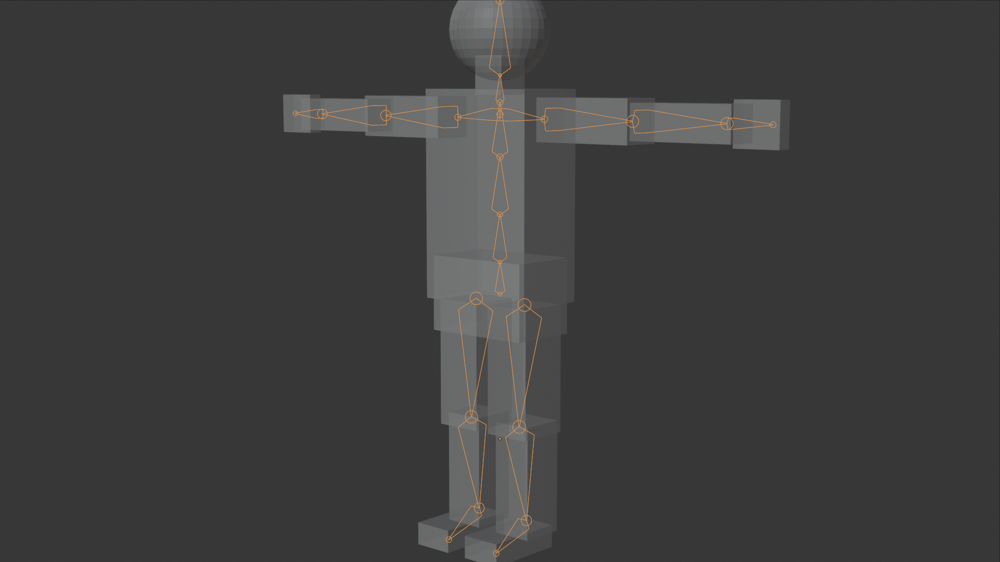
🎯 Armature Core Concepts
What Armatures Do:
- Control mesh deformation: Bones "pull" nearby mesh vertices when they move
- Create hierarchical movement: Moving a parent bone (shoulder) moves children (arm, hand)
- Enable posing: Rotate bones to create character poses
- Drive animation: Keyframe bone rotations/positions to create movement
- Provide constraints: Limit movement to natural ranges (elbows only bend one way)
Key Terminology:
- Armature: The entire skeletal system (the object that contains all bones)
- Bone: Individual element of the skeleton (like "upper arm" or "spine")
- Joint: Connection point between bones (shoulder, elbow, knee, etc.)
- Rig: Complete setup including armature, constraints, and controls for animation
- Deformation: How the mesh bends and stretches when bones move
💡 How Armatures and Meshes Work Together
The Relationship:
- Mesh: The visible surface (skin) of your character
- Armature: The invisible skeleton inside
- Skinning/Weight Painting: Defines which vertices follow which bones
- Deformation: Mesh vertices move based on bone movement
The Process:
- You rotate a bone (e.g., bend elbow 90 degrees)
- Blender looks at which vertices are "bound" to that bone
- Those vertices move to follow the bone's new position
- The mesh deforms naturally, creating a bent arm!
Armature vs. Skeleton vs. Rig - What's the Difference?
📚 Terminology Clarification
Armature (Blender-specific term):
- The object type in Blender that contains bones
- Literally called "Armature" in the Add menu
- A collection of bones working together
- Example: "Add an armature to your character"
Skeleton (General 3D term):
- Generic term for bone structure in any 3D software
- Same concept, different software calls it different things
- Maya calls it "joints," 3ds Max calls it "bones"
- Example: "The character's skeleton drives animation"
Rig (Complete control system):
- The ENTIRE animation control system
- Includes: armature + constraints + control bones + helpers
- A "rig" is production-ready; an "armature" is just the bones
- Example: "This character has a facial rig and body rig"
In Practice:
- This lesson = Building the armature (basic skeleton)
- Next lessons = Adding constraints and controls to create a full rig
- You'll hear people use these terms interchangeably—context makes it clear!
Why Proper Armature Setup Matters
⚠️ The Foundation of Animation
Good Armature = Easy Animation:
- Bones positioned correctly make natural poses effortless
- Proper hierarchy means moving shoulder automatically moves entire arm
- Clean naming makes finding bones instant (not hunting through lists)
- Well-placed joints create smooth deformation (no weird bending)
Bad Armature = Animation Nightmare:
- Misaligned bones create unnatural poses that fight you
- Wrong hierarchy means every movement requires manual adjustment
- Poor naming wastes hours searching for "which bone is the left pinky?"
- Bad joint placement creates ugly mesh distortion when posing
The Truth: You can't fix a bad armature with clever animation. But a great armature makes even beginner animation look good. Invest time here—it pays off a hundredfold!
💭 Industry Insight: Professional animators at Pixar, Disney, and game studios often spend 30-40% of character creation time on rigging (armature + controls). Why? Because a great rig makes animation 10x faster and results 10x better. The investment upfront saves months of pain later. This lesson focuses on the foundation—getting bones right from the start!
🔬 Bone Anatomy and Properties
Every bone in Blender has specific parts and properties that control how it behaves. Understanding bone anatomy is like learning the parts of a car before driving—you need to know what each component does to use bones effectively. Let's break down the anatomy of a Blender bone and explore its essential properties!
Parts of a Bone
🎨 Think of a Bone Like an Arrow: A bone is essentially a directional line segment with a thick end (head), a thin end (tail), and a body connecting them. The direction matters—bones "point" from head to tail, just like an arrow points from feather to tip. This directionality affects how rotation works and how the bone influences the mesh!
✅ Bone Components
1. Head (Start Point):
- The "root" or starting point of the bone
- Represented by a larger sphere/ball in viewport
- Where the bone connects to its parent (if it has one)
- Example: Elbow joint is the "head" of the forearm bone
- Position in 3D space defines where the bone begins
2. Tail (End Point):
- The "tip" or ending point of the bone
- Represented by a smaller sphere/point in viewport
- Where child bones typically connect to this bone
- Example: Wrist joint is the "tail" of the forearm bone
- Bone length = distance from head to tail
3. Body (Shaft):
- The line/octahedron shape connecting head and tail
- Visual representation of the bone's direction and length
- Thickness is just for visibility—doesn't affect functionality
- The body shows the bone's orientation in 3D space
4. Roll (Rotation around Bone's Length):
- How the bone is "twisted" along its length axis
- Affects the local coordinate system of the bone
- Important for controlling bend direction
- Example: Determines whether elbow bends forward or sideways
- Visualized by the "axis lines" when bone is selected
📐 Bone Coordinate System
Each bone has its own local coordinate system (like its personal compass):
Local Axes:
- Y-axis (Blue): Points from head to tail—the bone's "length" direction
- X-axis (Red): Points to the side—perpendicular to bone length
- Z-axis (Green): Points forward/backward—also perpendicular
- These axes rotate with the bone—they're "attached" to it
Why This Matters:
- When you rotate a bone on its X-axis, it bends (elbow, knee)
- Rotating on Z-axis typically twists (forearm rotation)
- Y-axis rotation usually isn't used (would make bone shorter/longer visually)
- Roll determines which way X and Z point
Bone Display Types
Blender offers several ways to visualize bones. Choosing the right display type makes working with armatures much easier!
💡 Bone Visualization Options
Octahedral (Default):
- Diamond/pyramid shape from head to tail
- Clear head and tail visualization
- Good for seeing bone orientation
- Best for: Initial armature setup and bone placement
Stick:
- Simple line from head to tail
- Minimal visual clutter
- Easy to see through to mesh underneath
- Best for: Weight painting and seeing mesh deformation
B-Bone (Bendy Bones):
- Segmented bone that can curve
- Multiple segments create smooth bending
- More organic deformation
- Best for: Spine, tail, tentacles—anything that curves smoothly
Envelope:
- Shows radius of influence around bone
- Spherical areas at head and tail
- Visualizes which vertices the bone affects
- Best for: Envelope skinning method (older technique, less common now)
Wire:
- Bone outlines only, no fill
- Very transparent, minimal obstruction
- Best for: Complex rigs where you need maximum visibility
How to Change Display:
- Select armature (Object Mode)
- Armature Properties panel (icon looks like skeleton)
- Viewport Display section
- Change "Display As" dropdown
Bone Layers and Organization
Complex characters can have 50-100+ bones! Bone layers help you organize them and reduce visual clutter.
📁 Using Bone Layers
What Are Bone Layers?
- 32 separate "layers" (like folders) to organize bones
- Each bone can be on one or more layers
- Toggle layer visibility to show/hide bone groups
- Doesn't affect functionality—purely organizational
Common Layer Organization:
- Layer 1: Main deformation bones (spine, limbs)
- Layer 2: Facial bones (jaw, eyes, etc.)
- Layer 3: Hand/finger bones
- Layer 4: Foot/toe bones
- Layer 10+: Control/helper bones (IK controllers, targets)
- Layer 20+: Mechanism bones (usually hidden)
Managing Layers:
- View layers: Armature Properties > Skeleton > Layers (grid of dots)
- Assign bone to layer: Select bone(s), press
M, choose layer(s) - Show/hide layer: Click layer dot in properties or press
Min viewport - Multiple layers: Shift+click to select multiple layer dots
Bone Relationships and Modes
🔗 Connected vs. Disconnected Bones
Connected Bones:
- Child bone's head is "locked" to parent's tail
- When parent tail moves, child head follows automatically
- Creates rigid joint connection
- Example: Forearm connected to upper arm—elbow joint stays together
- Pro: Joint stays together automatically
- Con: Less flexibility for complex rigs
Disconnected Bones:
- Child bone's head can be anywhere in space
- Still follows parent's rotation and position, but offset
- More flexible for complex rigging
- Example: Shoulder bone controlling arm, but not directly touching it
- Pro: Maximum control and flexibility
- Con: Need to manually maintain joint positions
When to Use Each:
- Connected: Simple chains (fingers, spine segments, simple limbs)
- Disconnected: Complex rigs, control bones, IK setups
- Can toggle connection: Select bone, Armature > Parent > Connect/Disconnect
Bone Constraints Preview
While we'll cover constraints in detail in the rigging lesson, it's important to know they exist and what they do!
🔒 What Are Bone Constraints?
Constraints Control How Bones Can Move:
- Limit Rotation: "This elbow can only bend 0-150 degrees" (prevents backward bending)
- Track To: "This eye bone always looks at the target" (eye following movement)
- IK (Inverse Kinematics): "Move hand, arm figures out elbow position automatically"
- Copy Rotation: "This bone mirrors another bone's rotation"
- Child Of: "This bone follows another bone's movement"
Why Mention This Now?
- Understanding that constraints exist helps you plan your armature
- Some bone placements only make sense when you know constraints will be added later
- Professional rigs use constraints extensively—they're not optional!
- We'll add constraints after basic armature is built
Bone Properties Panel
When you select a bone in Edit Mode or Pose Mode, the Bone Properties panel shows all its settings. Let's tour the important ones!
⚙️ Essential Bone Properties
Transform Panel:
- Head/Tail Position: Exact X, Y, Z coordinates in 3D space
- Roll: Rotation around the bone's length axis (in degrees)
- Length: Distance from head to tail
- Can type exact values for precision placement
Relations Panel:
- Parent: Which bone is this bone's parent?
- Connected: Checkbox—is head locked to parent's tail?
- Layers: Which layer(s) this bone appears on
Deform Panel:
- Deform: Checkbox—does this bone deform the mesh? (control bones = off)
- Envelope/B-Bone settings: Advanced deformation controls
- Most bones have "Deform" checked
Display Panel:
- Hide: Make bone invisible (still functional)
- Custom Shape: Replace bone display with custom object (for control bones)
- Useful for creating animator-friendly control rigs
💭 Pro Tip: When building your first armatures, stick with octahedral display and connected bones. These are the simplest to understand and visualize. As you gain experience, you'll learn when to use other display types and disconnected bones for advanced rigs. Master the basics first—complexity comes naturally with practice!
🎯 Bone Anatomy Recap
- Head: Start point, connects to parent
- Tail: End point, children connect here
- Body: Visual representation of bone direction
- Roll: Twist that determines local axes orientation
- Local Axes: Y=length, X=bend, Z=twist
- Display Types: Octahedral (default), Stick, B-Bone, etc.
- Connection: Connected (locked to parent) vs Disconnected (free)
- Deform: Controls whether bone affects mesh
Understanding these fundamentals makes everything else in rigging click into place!
🎬 Creating Your First Armature
Theory is great, but let's get hands-on! In this section, you'll create your first armature, learn the essential tools for bone manipulation, and understand the different modes for working with bones. By the end, you'll be comfortable adding, moving, and editing bones in Blender.
Adding an Armature to Your Scene
🎨 Starting Simple: Just like you wouldn't build a house by starting with the roof, don't start with a complex 50-bone character rig. We'll begin with a single bone, learn to manipulate it, then build up from there. Master the basics with one bone, and complex armatures become just "more of the same!"
✅ Adding Your First Armature
Method 1: Add Menu (Standard)
- Ensure you're in Object Mode (press
Tabif needed) - Press
Shift + Ato open Add menu - Navigate to Armature
- Click on Single Bone
- A single bone appears at the 3D cursor location!
What You'll See:
- An octahedral (diamond-shaped) bone appears
- It's vertical by default (pointing up in Z-axis)
- The bone is about 1 Blender unit long
- It's automatically selected (highlighted)
Method 2: From Existing Character (Practical)
- Select your character mesh (the model you created in Lesson 36)
- Press
Shift + A> Armature > Single Bone - The bone appears at 3D cursor (usually world origin)
- You'll position it inside the character mesh next
Understanding Armature Modes
Armatures have TWO special modes that meshes don't have. Understanding when to use each is crucial!
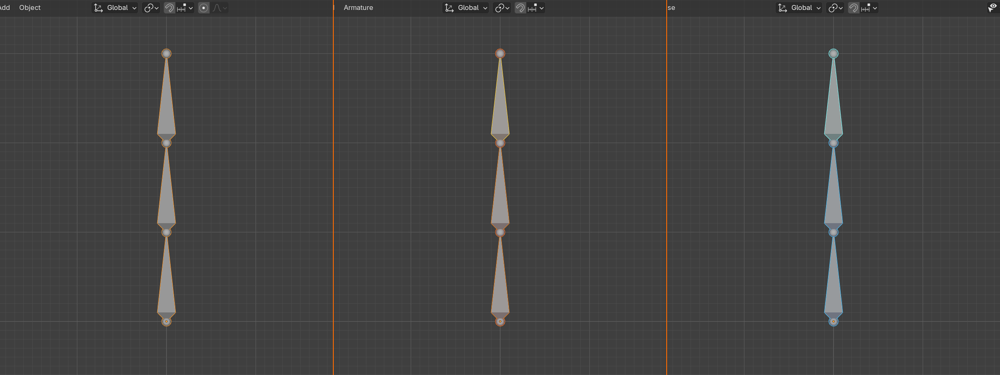
🎭 The Three Armature Modes
Object Mode (Armature as a Whole):
- Move/rotate/scale the ENTIRE armature
- Can't select individual bones
- Used for positioning the whole skeleton in your scene
- When to use: Initial placement, moving character to different location
- Access: Press
Tabfrom Edit/Pose mode, or mode dropdown
Edit Mode (Building the Skeleton):
- Add, delete, and position bones
- Define the bone structure and hierarchy
- Set up the "rest pose" (default neutral position)
- Like Edit Mode for meshes—you're changing the structure itself
- When to use: Building armature, adjusting bone placement, creating hierarchy
- Access: Press
Tabfrom Object Mode, or mode dropdown
Pose Mode (Posing and Animation):
- Rotate and move bones to create poses
- Keyframe bone positions for animation
- Test how the rig moves (doesn't change the skeleton structure)
- Like moving a puppet—bones return to rest pose when you clear pose
- When to use: Testing rig, creating poses, animating character
- Access:
Ctrl + Tabfrom Edit Mode, or mode dropdown
⚠️ Critical Mode Distinction
Edit Mode vs. Pose Mode - The Key Difference:
| Aspect | Edit Mode | Pose Mode |
|---|---|---|
| Purpose | Build skeleton structure | Pose/animate character |
| Changes | Permanent (alters rest pose) | Temporary (can be cleared) |
| Can Add Bones | ✓ Yes | ✗ No |
| Can Delete Bones | ✓ Yes | ✗ No |
| Keyframing | ✗ Can't keyframe | ✓ Can keyframe |
| Bone Color | Orange (selected) | Blue (selected) |
| When to Use | Building armature | Testing/animating |
Remember: Edit Mode = Surgeon (permanent changes to skeleton). Pose Mode = Puppeteer (temporary poses, can reset).
Basic Bone Manipulation in Edit Mode
Let's learn the essential tools for working with bones. These are your bread-and-butter operations!
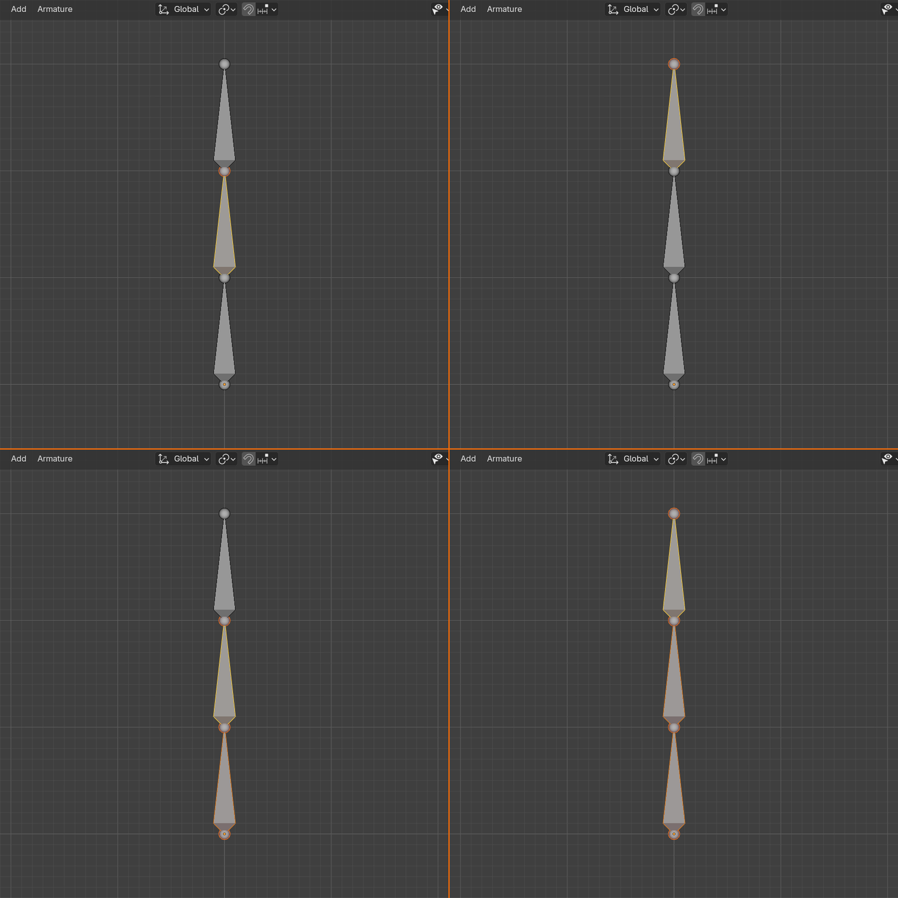
🛠️ Essential Edit Mode Operations
Selecting Bones:
- Click bone body: Selects entire bone
- Click head/tail sphere: Selects just that endpoint
- Box select:
B, drag box around bones - Circle select:
C, paint over bones to select - Select all:
A - Deselect all:
Alt + A - Invert selection:
Ctrl + I
Moving Bones:
- Move:
G(just like mesh objects!) - Constrain to axis:
G, thenX/Y/Z - Move head only: Select head sphere, press
G - Move tail only: Select tail sphere, press
G - Move whole bone: Click body, press
G
Rotating Bones:
- Rotate:
R(rotates around head by default) - Roll (twist along length):
Ctrl + R - Constrain rotation:
R, thenX/Y/Z - Rotation in Edit Mode changes bone's rest orientation
Scaling Bones:
- Scale:
S(changes bone length) - Scale on axis:
S, thenX/Y/Z - Scaling Y-axis (length axis) makes bone longer/shorter
- Scaling X/Z changes visual size (doesn't affect function much)
Adding More Bones (Building Your Skeleton)
One bone is lonely! Let's learn how to add more bones and build up a skeleton.
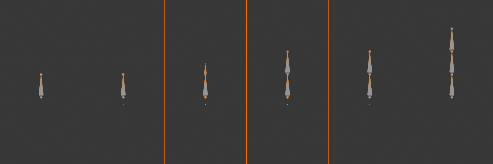
➕ Methods for Adding Bones
Method 1: Extrude (Most Common - Creates Connected Bones)
- In Edit Mode, select a bone (or just its tail)
- Press
Eto extrude - Move mouse to position new bone's tail
- Click to confirm
- New bone is created, connected to the selected bone
- Perfect for: Creating bone chains (arm, spine, fingers)
Method 2: Duplicate (Creates Copy)
- Select bone(s) to duplicate
- Press
Shift + D - Move duplicated bone(s) to new position
- Click to confirm
- Duplicate is independent (not connected to original)
- Perfect for: Creating symmetrical bones (left arm from right arm)
Method 3: Add New (Independent Bone)
- In Edit Mode, position 3D cursor where you want new bone
- Press
Shift + A> Single Bone - New bone appears at cursor
- Completely independent from existing bones
- Perfect for: Starting new bone chains (adding legs to torso armature)
Method 4: Subdivide (Split Bone in Two)
- Select a bone
- Right-click > Subdivide (or press
W> Subdivide) - Bone splits into two connected bones
- Repeat to create multiple segments
- Perfect for: Creating spine segments, finger joints
💡 Practical Example: Creating an Arm Chain
Step-by-Step: Build a Simple Arm (3 bones)
- Start: Create armature with single bone
- Enter Edit Mode: Press
Tab - Position starting bone:
- Select the bone's tail (small sphere at top)
- Press
G, move it to shoulder position - This is your "upper arm" bone
- Create forearm:
- With tail still selected, press
E(extrude) - Move to elbow position, click to confirm
- Press
Eagain, move to wrist position - You now have shoulder → elbow → wrist!
- With tail still selected, press
- Create hand:
- Press
Eonce more, move to knuckles - You have a 3-bone arm chain!
- Press
What You Created:
- 3 bones, all connected (each bone's tail = next bone's head)
- Automatic parent-child relationships (we'll explore this next section)
- A functional arm skeleton ready for posing!
Deleting and Disconnecting Bones
🗑️ Removing and Modifying Bones
Deleting Bones:
- Select bone(s) to delete
- Press
X> Delete Bones - Child bones become orphaned (no longer connected to anything)
- You can re-parent them to other bones
Dissolving Bones:
- Select bone(s), press
X> Dissolve - Removes bone but maintains connections (children connect to parent)
- Useful for removing bones from middle of chain
Disconnecting Bones:
- Select bone (that's connected to parent)
Alt + P> Disconnect Bone- Bone keeps same parent but head is no longer locked to parent's tail
- Can now move head independently
Reconnecting Bones:
- Select bone,
Alt + P> Connect Bone - Head snaps to parent's tail
- Becomes locked again
Bone Naming in Edit Mode
Naming bones properly from the start saves hours of confusion later!
✅ Quick Bone Naming
Renaming a Bone:
- Select bone in Edit Mode
- Press
F2(or look at Bone Properties panel) - Type new name
- Press
Enterto confirm
Naming Conventions (We'll cover in detail later):
- Use descriptive names: "upper_arm" not "Bone.003"
- Include side suffix: "upper_arm.L" (left) or "upper_arm.R" (right)
- Blender recognizes .L and .R for automatic mirroring!
- Use underscores for multi-word names: "lower_leg" not "lowerleg"
💭 Practice Tip: The best way to learn bone manipulation is to create a simple skeleton right now. Add an armature, extrude 5-6 bones in a chain, move them around, try rotating them. Delete some, add new ones. Play with it for 10 minutes—hands-on experience beats reading theory every time. You can't "break" anything, so experiment freely!
🎯 Creating Armatures Summary
- Add armature: Shift + A > Armature > Single Bone
- Three modes: Object (move whole), Edit (build), Pose (animate)
- Edit Mode is for building: Tab to enter, structure changes permanent
- Pose Mode is for posing: Ctrl + Tab, changes are temporary
- Extrude bones: E (creates connected chains)
- Move bones: G (same as mesh objects)
- Roll bones: Ctrl + R (twist along length)
- Name bones: F2 to rename selected bone
You now know how to create and manipulate bones—time to learn hierarchies!
🌳 Bone Hierarchies and Parenting
Bone hierarchies are what make character animation magical! When you move a shoulder, the entire arm follows. When you rotate a hip, the whole leg moves with it. This is the power of parent-child relationships in armatures. Understanding hierarchies transforms a collection of disconnected bones into a functional, intuitive skeleton!
Understanding Parent-Child Relationships
🌳 Family Tree Analogy: Think of bones like a family tree. A parent bone (shoulder) has children (upper arm, forearm, hand). When the parent moves, all descendants move with them—just like if a parent walks away, their children follow. But children can move independently without affecting their parent. A hand can wave while the shoulder stays still!
✅ How Hierarchies Work
Parent Bone (The Boss):
- Controls its position, rotation, and scale
- When it moves, ALL children move with it
- When it rotates, children rotate around its position
- Can have multiple children (spine has ribs, pelvis has legs)
- Example: Upper arm bone is parent of forearm
Child Bone (The Follower):
- Inherits parent's transformations
- Can move independently within parent's coordinate system
- Moving child does NOT affect parent
- Can also be a parent to other bones (forearm is child of upper arm, parent of hand)
- Example: Forearm follows upper arm but can also rotate independently
Root Bone (The Ancestor):
- Top of the hierarchy—has no parent
- Usually the pelvis/hips or base of spine
- Moving root moves the ENTIRE character
- Every bone chain traces back to a root
- Example: Pelvis bone controls whole body position
Automatic Hierarchy from Extrusion
Good news: when you extrude bones, Blender automatically creates parent-child relationships!
🎯 Extrusion Creates Hierarchy Automatically
What Happens When You Extrude:
- Select a bone (or its tail)
- Press
Eto extrude - New bone is created
- New bone is automatically parented to the original bone
- New bone is connected (head locked to parent's tail)
Example: Building an Arm
- Start with shoulder bone
- Extrude → creates upper_arm (child of shoulder)
- Extrude → creates forearm (child of upper_arm)
- Extrude → creates hand (child of forearm)
- Result: shoulder → upper_arm → forearm → hand chain
- Moving shoulder moves entire arm!
Visual Indicator:
- In Edit Mode, bones show connection lines
- Dotted line from child's head to parent's tail (if connected)
- Bone Properties panel shows "Parent" field
Manual Parenting (When You Need Control)
Sometimes you need to parent bones that weren't extruded from each other. Here's how!
💡 Manual Bone Parenting
Method 1: Parent with Keep Offset (Most Common)
- In Edit Mode, select the child bone(s) first
- Hold
Shiftand select the parent bone last - Press
Ctrl + Pto open parent menu - Choose "Keep Offset"
- Child stays where it is, but now follows parent
- Child is disconnected (can be anywhere in space)
Method 2: Parent Connected
- Select child bone(s), then parent bone
- Press
Ctrl + P - Choose "Connected"
- Child's head snaps to parent's tail
- Child is now connected (head locked to parent tail)
When to Use Each:
- Keep Offset: Attaching limbs to torso (arm to shoulder)
- Connected: Creating bone chains where joints must stay together
- Example: Shoulder blade bone parents arm but isn't directly connected
Clearing Parent Relationships
🔓 Unparenting Bones
Remove Parent (Complete Separation):
- Select bone(s) you want to unparent
- Press
Alt + P - Choose "Clear Parent"
- Bone becomes independent (no parent)
- Stays at current position
Disconnect (Keep Parent, Remove Connection):
- Select connected bone
- Press
Alt + P - Choose "Disconnect Bone"
- Keeps same parent but head becomes free
- Useful for advanced rigging techniques
Understanding Bone Chains vs. Bone Trees
📊 Hierarchy Patterns
Bone Chain (Linear Hierarchy):
- Each bone has exactly one child (except the last)
- Forms a line: A → B → C → D
- Examples: Finger (palm → proximal → middle → distal), Tail, Tentacle
- Simple, predictable movement
- Created easily by extruding repeatedly
Bone Tree (Branching Hierarchy):
- Parent has multiple children that branch out
- Forms tree structure: A → B, A → C, A → D
- Examples: Spine (branches to ribs, head, arms), Hand (palm branches to 5 fingers)
- More complex but represents real anatomy
- Most character armatures are trees, not simple chains
Testing Your Hierarchy in Pose Mode
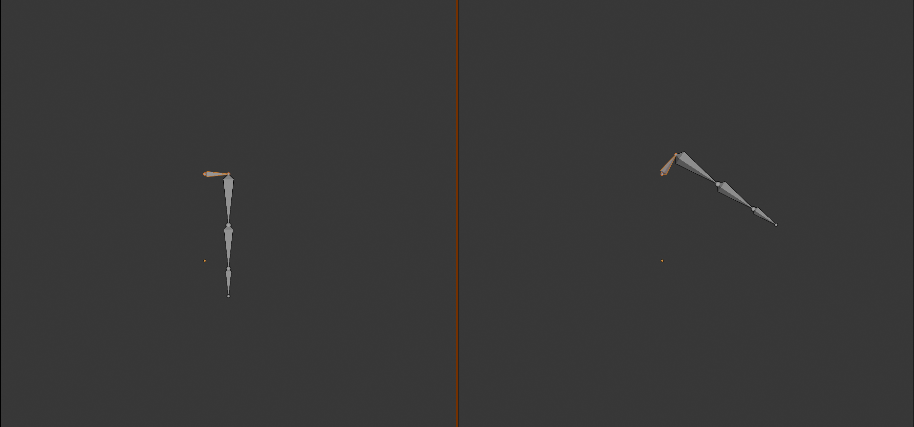
The best way to verify your hierarchy is correct? Test it in Pose Mode!
✅ Hierarchy Testing Workflow
- Switch to Pose Mode:
- Press
Ctrl + Tabfrom Edit Mode - Or select armature and change mode dropdown to "Pose Mode"
- Press
- Select a parent bone:
- Click on the shoulder bone, for example
- Rotate it:
- Press
R, move mouse to rotate - Watch what happens!
- Press
- Expected Result:
- Entire arm should rotate with shoulder
- All children (upper arm, forearm, hand) move together
- If only shoulder moves, hierarchy is broken!
- Test child bones:
- Select forearm, rotate it
- Only forearm and hand should move
- Upper arm and shoulder should stay still
- Reset pose:
- Select all bones (
A) - Press
Alt + R(clear rotation) - Press
Alt + G(clear location) - Bones return to rest pose
- Select all bones (
Common Hierarchy Mistakes
⚠️ Hierarchy Errors and Fixes
Mistake 1: Circular Parent Relationship
- Problem: Bone A parents Bone B, Bone B parents Bone A
- Symptom: Blender shows error, won't allow it
- Fix: Can't create circular hierarchies—rethink your structure
Mistake 2: Wrong Parent Order
- Problem: Hand parents forearm instead of vice versa
- Symptom: Moving hand moves entire arm (backwards!)
- Fix: Clear parent, re-parent correctly (forearm parents hand)
Mistake 3: Disconnected When Should Be Connected
- Problem: Finger bones aren't connected, gaps appear when posing
- Symptom: Joints separate when you rotate bones
- Fix: Select child,
Ctrl + P> Connected
Mistake 4: Multiple Root Bones
- Problem: Arms, legs, spine all separate—no single root
- Symptom: Can't move entire character by selecting one bone
- Fix: Create root bone (pelvis), parent everything to it
Mistake 5: Parented to Wrong Bone
- Problem: Hand parented to shoulder instead of forearm
- Symptom: Hand ignores forearm rotation
- Fix:
Alt + Pto clear, re-parent to correct bone
Visualizing Hierarchy in Blender
Blender provides tools to see and understand your bone hierarchy!
👁️ Hierarchy Visualization Tools
Outliner (Hierarchical List View):
- Top-right panel in default layout
- Shows armature object
- Expand armature (click triangle) to see all bones
- Indentation shows parent-child relationships
- Children are indented under parents
- Perfect for: Understanding complex hierarchies at a glance
Bone Properties Panel:
- Select a bone in Edit Mode or Pose Mode
- Look at Bone Properties (bone icon on right panel)
- Relations section: Shows parent bone name
- Shows if bone is connected or not
Viewport Display:
- Edit Mode: Connected bones show dotted line to parent
- Pose Mode: Can enable "Axes" display to see bone orientations
- Armature Properties > Viewport Display > check "Axes"
Best Practices for Hierarchies
✅ Professional Hierarchy Guidelines
1. Single Root Bone
- Every character should have ONE root bone at base
- Usually pelvis/hips for bipeds
- Makes moving entire character easy
- Industry standard across all 3D software
2. Logical Flow
- Parent flows from torso → limbs (not limbs → torso)
- Spine flows from pelvis → head (bottom to top)
- Arms flow from shoulder → hand (proximal to distal)
- Legs flow from hip → foot (proximal to distal)
3. Connect Simple Chains
- Finger bones: connect them (palm → tip)
- Spine segments: connect them
- Simple limbs: connect shoulder → upper arm → forearm → hand
- Keeps joints together automatically
4. Disconnect Complex Joints
- Shoulder blade to arm: disconnect (complex joint)
- Control bones: usually disconnected
- When you need offset control: disconnect
5. Test Early and Often
- After creating each limb, test in Pose Mode
- Verify parent moves children
- Verify children don't move parents
- Fix issues immediately—easier than fixing later!
💭 Real-World Insight: In professional animation studios, riggers spend significant time planning hierarchies before building them. A well-planned hierarchy makes animation intuitive—animators can focus on performance instead of fighting the rig. A poorly planned hierarchy makes every pose a struggle. The 30 minutes you invest planning hierarchy saves 30 hours of animation pain!
🎯 Bone Hierarchies Summary
- Parent bone: Controls all children when it moves
- Child bone: Follows parent, can move independently
- Root bone: Top of hierarchy, has no parent
- Extrude: Automatically creates parent-child relationship
- Manual parent: Ctrl + P (Keep Offset or Connected)
- Unparent: Alt + P (Clear Parent)
- Connected: Child head locked to parent tail
- Disconnected: Child can be anywhere in space
- Test hierarchy: Pose Mode, rotate parent, watch children
Master hierarchies and you master character rigging!
🎯 Positioning Bones Accurately
Creating bones is one thing—positioning them correctly inside your character is another! Proper bone placement is critical for natural deformation and realistic animation. Place a knee bone too high or too low, and your character will look broken when it bends. Let's learn the techniques and tools for precise bone positioning that professional riggers use every day.
Why Bone Position Matters
🎭 The Puppet Master's Secret: Imagine controlling a marionette where the strings attach at random points instead of the joints. Pull the "knee" string, but it's attached to the shin—the leg bends in the wrong place! Same with 3D bones: they must align with the character's actual joints (anatomical pivot points) or deformation looks unnatural and broken.
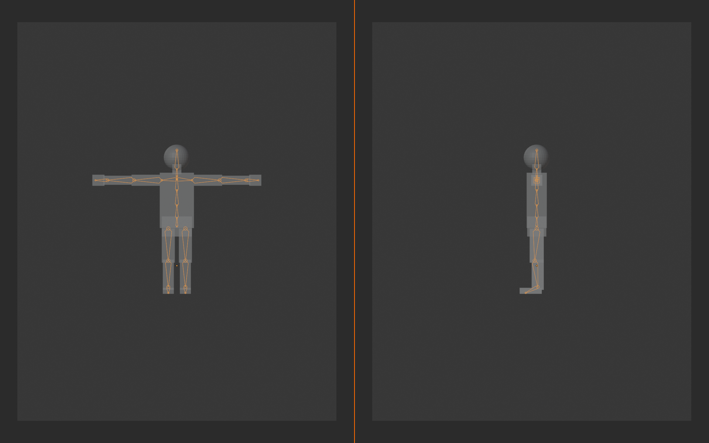
⚠️ Consequences of Poor Bone Placement
Visual Problems:
- Mesh "breaks" or tears at joints when posed
- Unnatural bending (knee bends in middle of shin)
- Volume loss (arm gets thinner when bent)
- Candy-wrapper effect (mesh twists wrong)
Animation Problems:
- Difficult to create natural poses
- Constant fighting against the rig
- Need extensive corrective shapes/blend shapes
- More work in weight painting to compensate
The Truth: You can't fix bad bone placement with good weight painting. Get bones right first—everything else flows naturally!
Anatomical Landmarks - Where Bones Should Go
Bones should align with real anatomical joints. Here's where each major bone should be positioned!
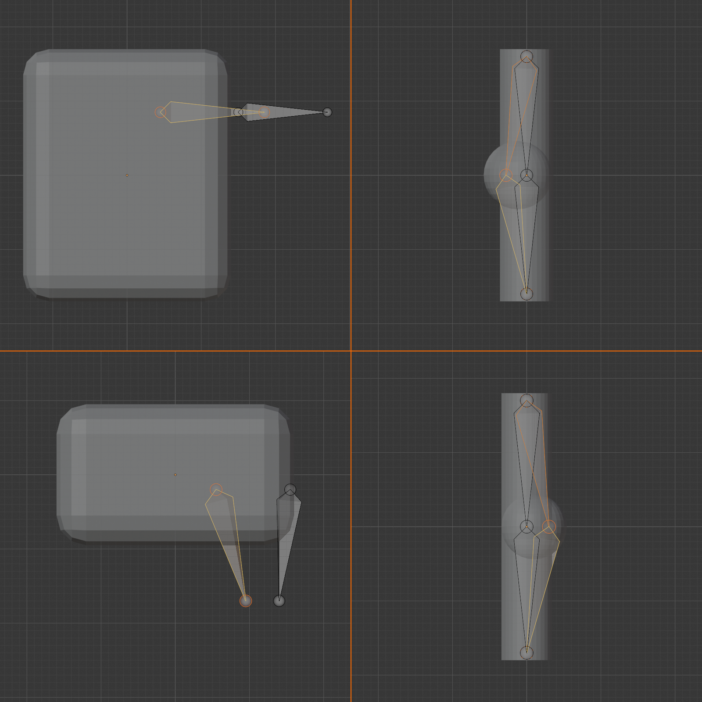
✅ Key Bone Positions for Bipeds
Spine/Torso:
- Root/Pelvis: Center of hips, at hip joint height
- Lower spine: Center of lower back
- Mid spine: Center of ribcage
- Upper spine: Between shoulder blades
- Chest: Upper ribcage (optional additional bone)
- Neck: Base of neck to base of skull
- Head: Base of skull to top of head
Arms:
- Shoulder/Clavicle: From sternum to shoulder joint
- Upper arm: Shoulder joint to elbow joint
- Forearm: Elbow joint to wrist joint
- Hand: Wrist to knuckles
- Fingers: Each knuckle joint (3 bones per finger, 2 for thumb)
Legs:
- Upper leg/Thigh: Hip joint to knee joint
- Lower leg/Calf: Knee joint to ankle joint
- Foot: Ankle to ball of foot
- Toes: Ball of foot to toe tips (optional, often simplified)
Techniques for Precise Positioning
Let's learn the practical techniques for getting bones exactly where they need to be!
🛠️ Bone Positioning Methods
Method 1: Visual Alignment (Quick and Easy)
- X-Ray Mode:
- Press
Alt + Zto enable X-ray view - See bones through mesh
- Perfect for initial rough positioning
- Press
- Multiple Viewports:
- Front view (
Numpad 1): Check left-right alignment - Side view (
Numpad 3): Check front-back depth - Top view (
Numpad 7): Check width/spacing - Switch constantly—don't trust just one view!
- Front view (
- Wire/Solid Toggle:
- Press
Zto open shading menu - Wireframe: See everything, no occlusion
- Solid: Better depth perception
- Toggle as needed
- Press
Method 2: Snapping (Precise Alignment)
- Enable Snapping:
- Top header: Click magnet icon
- Or press
Shift + Sfor snap menu
- Snap Cursor to Selection:
- Select mesh vertex at joint location
Shift + S> Cursor to Selected- 3D cursor moves to that vertex
- Snap Bone to Cursor:
- Select bone head or tail
Shift + S> Selection to Cursor- Bone point snaps to cursor location
- Perfect for: Aligning bones to exact mesh vertices
Method 3: Proportional Editing (Smooth Adjustment)
- Enable with
Okey - Move bone head/tail with smooth falloff
- Useful for fine-tuning chains without breaking connections
- Scroll to adjust influence radius
Working with Reference Images
The same reference images you used for modeling are invaluable for bone positioning!
💡 Using References for Bone Placement
Setup (If Not Already Done):
- Add background images (covered in Lesson 36)
- Or use reference images loaded as planes
- Show character front and side views
Alignment Workflow:
- Front view positioning:
- Switch to front view (
Numpad 1) - Make armature visible, mesh semi-transparent
- Position bone heads/tails to match reference joints
- Check left-right symmetry
- Switch to front view (
- Side view positioning:
- Switch to side view (
Numpad 3) - Adjust bone depth (front-back position)
- Particularly important for knees (slightly forward)
- Spine should curve naturally
- Switch to side view (
- Verify in perspective:
- Rotate view around character
- Check that bones look correct from all angles
- Ortho views can hide issues perspective reveals
Joint-Specific Positioning Guidelines
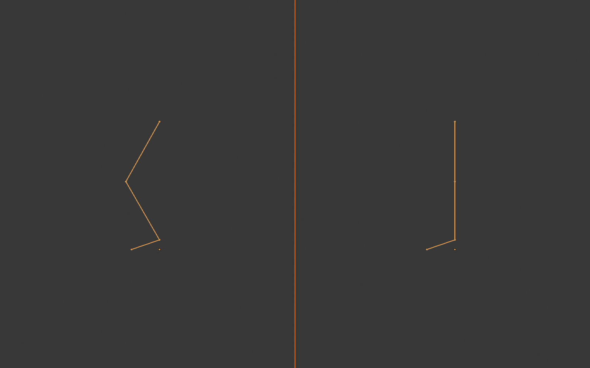
🦴 Critical Joint Positions
Shoulder Joint:
- NOT at the visible shoulder top (that's muscle)
- Actual joint is inside ribcage, near armpit
- Arm bone head should be at this interior point
- Common mistake: placing too far out on shoulder surface
Elbow Joint:
- At the pointy part of elbow (olecranon)
- Visible from outside when arm is straight
- Upper arm tail and forearm head meet here
- Should be slightly behind center of arm in side view
Wrist Joint:
- Where hand meets arm (wrist crease)
- Not at the wrist bump (that's bone end, not pivot)
- Center of rotation when hand bends
Hip Joint:
- INSIDE pelvis, not at visible hip surface
- Much deeper than you'd expect
- Approximately at groin crease when leg lifts forward
- Common mistake: placing on outside hip bone (ilium)
Knee Joint:
- At kneecap (patella) in front view
- SLIGHTLY FORWARD in side view (not center of leg)
- This forward position is crucial for natural bending
- Upper leg tail and lower leg head meet here
Ankle Joint:
- Between the ankle bumps (malleoli)
- Pivot point when foot flexes
- Not at heel—that's behind the ankle joint
Bone Roll Alignment
Bone roll (twist) is just as important as position! Incorrect roll causes weird bending directions.
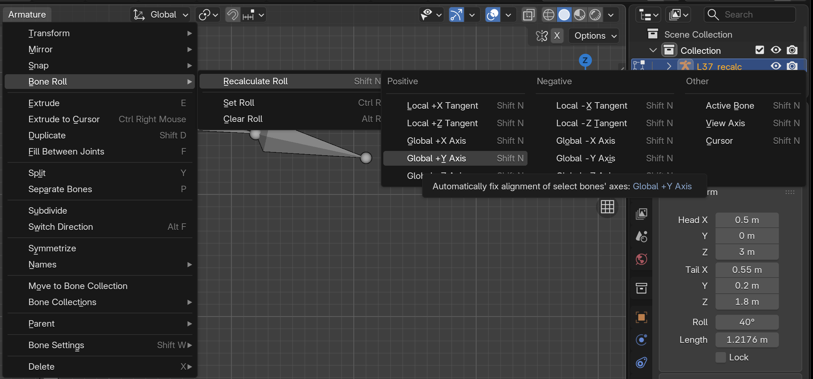
🔄 Understanding and Fixing Bone Roll
What Is Roll?
- Rotation around the bone's length (Y-axis)
- Determines which way X and Z axes point
- Controls which direction bone bends
- Critical for elbows, knees, fingers
Why Roll Matters:
- Elbow should bend forward-back (like real arm)
- If roll is wrong, elbow might bend sideways!
- Knee should bend backward (leg folds)
- Wrong roll = unnatural movement
Checking Roll:
- Armature Properties > Viewport Display
- Enable "Axes" checkbox
- See X (red), Y (blue), Z (green) axes on each bone
- X-axis typically points in bend direction
Adjusting Roll Manually:
- Select bone in Edit Mode
- Press
Ctrl + R(roll tool) - Move mouse to rotate bone around its length
- Or type exact roll value in properties
Automatic Roll Calculation:
- Select bone(s), press
Ctrl + N - Choose roll calculation method:
- Global +Y: Z-axis points up (good for limbs)
- Global +Z: Good for spine bones
- Active Bone: Match selected bone's roll
- View Axis: Match current camera view
Bone Length Considerations
📏 Bone Length Best Practices
General Guidelines:
- Bone length = distance from one joint to the next
- Upper arm: shoulder to elbow
- Don't make bones longer than anatomical segment
- Don't make them significantly shorter either
Spine Special Case:
- Spine has no clear "joints" between vertebrae
- Divide into 3-5 segments for flexibility
- Each segment should be roughly equal length
- More segments = smoother bending
- Fewer segments = simpler, faster to animate
Fingers and Toes:
- Each segment corresponds to one bone (phalanx)
- 3 bones per finger (proximal, middle, distal)
- 2 bones per thumb (no middle phalanx)
- Can simplify toes (1 bone) for simple characters
Common Positioning Mistakes
❌ Avoid These Positioning Errors
Mistake 1: Bones Outside Mesh
- Bones sticking out of character's body
- Results in poor deformation (mesh doesn't follow bone)
- Always keep bones inside mesh volume
Mistake 2: Knee/Elbow Dead Center
- Knee must be SLIGHTLY FORWARD of leg center
- Elbow slightly behind arm center
- Otherwise IK solvers have ambiguity (which way to bend?)
Mistake 3: Shoulder Too Far Out
- Shoulder joint is deep inside ribcage, not at shoulder surface
- Placing on surface creates "popping" when arm rotates
- Position at armpit level, inside chest
Mistake 4: Asymmetrical Placement
- Left shoulder at different height than right
- Use mirror modifier or copy positions
- Symmetry is crucial for believable characters
Mistake 5: Ignoring Side View
- Bones look good from front, but wrong depth
- ALWAYS check side and perspective views
- Front view alone is insufficient
💭 Pro Workflow: Professional riggers position bones iteratively: rough placement → test in Pose Mode → adjust → test again → repeat. Don't expect perfection on first try! The 5 minutes spent adjusting a knee position now saves hours of broken animation later. Test, adjust, test, adjust—that's the professional way!
🎯 Bone Positioning Summary
- Align to anatomical joints: Not surface, but actual pivot points
- Use X-ray mode: Alt + Z to see through mesh
- Check all views: Front, side, top, and perspective
- Snap to precision: Use Shift + S snap menu
- Reference images: Match bone positions to anatomical landmarks
- Knee slightly forward: Critical for IK and natural bending
- Fix bone roll: Ctrl + N for automatic roll, Ctrl + R to adjust manually
- Test in Pose Mode: Verify bones bend naturally
- Iterate and refine: Position, test, adjust, repeat
Perfect positioning = perfect deformation!
🏷️ Naming Conventions and Organization
Imagine trying to find a specific book in a library where every book is labeled "Book.001", "Book.002", "Book.003"... nightmare, right? Same with bones! Professional rigs have 50-200+ bones, and good naming is the difference between efficient rigging and endless frustration. Let's learn the naming conventions that make complex armatures manageable!
Why Bone Naming Matters
🗂️ The Library Analogy: A well-organized library has sections (fiction, non-fiction), shelves (A-Z), and clear labels on every book. You can find anything in seconds. A poorly organized library is chaos. Your armature is a library of bones—organize it well, and rigging/animating is smooth sailing. Organize it poorly, and you'll waste hours hunting for "that one finger bone."
⚠️ Problems with Poor Naming
What Happens with Default Names:
- Blender auto-names: "Bone", "Bone.001", "Bone.002", etc.
- Which is the left forearm? Is it Bone.017 or Bone.034?
- Need to test each bone to figure out what it controls
- Animation takes 3x longer (finding bones instead of animating)
- Impossible to share rig with others (they can't understand it)
Benefits of Good Naming:
- Find any bone instantly by name
- Understand rig structure at a glance
- Automatic symmetry tools work (Blender recognizes .L and .R)
- Scripts and automation become possible
- Other people can use your rig without training
Standard Bone Naming Convention
The 3D industry has developed standard naming patterns. Follow these and your rigs will be professional-quality!
✅ Professional Naming Pattern
Basic Format:
[description].[side_suffix]
Examples:
- upper_arm.L
- forearm.R
- spine_01
- head
Component Breakdown:
- Description: Clear, descriptive name in lowercase
- Use underscores: For multi-word names (lower_leg, not lowerleg)
- Side suffix: .L (left), .R (right), or none (center)
- Numbers: _01, _02 for sequences (spine_01, spine_02)
Why This Format?
- Lowercase with underscores = Python-friendly (for scripting)
- .L and .R = Blender recognizes these for automatic mirroring
- Descriptive names = self-documenting (no need to remember codes)
- Standard across industry (same pattern in Maya, 3ds Max, etc.)
Side Suffixes - Left and Right
Blender has special recognition for left/right naming. Use it properly and get powerful automatic tools!
🔀 Left/Right Naming Magic
Blender's Recognized Suffixes:
- .L - Left side (Blender's convention)
- .R - Right side
- No suffix - Center/middle bones (spine, head, pelvis)
- Case sensitive: must be capital .L and .R
Alternative Suffixes (Also Recognized):
- _L and _R (underscore instead of period)
- .Left and .Right (full words)
- _left and _right (lowercase)
- Stick with .L and .R—shortest and most standard
What Automatic Features You Get:
- X-Axis Mirror: Edit > Symmetrize (flips .L to create .R automatically)
- Pose Mirroring: Copy pose from left side to right side instantly
- Weight Paint Mirror: Paint weights on left, auto-copy to right
- Animation Flipping: Flip walk cycle from left foot to right foot
Naming Different Bone Types
🦴 Bone Type Naming Examples
Spine/Torso Bones (Center, No Suffix):
pelvisorroot- Base of spinespine_01- Lower backspine_02- Mid backspine_03- Upper backchest- Ribcage (optional)neck- Neck segmenthead- Head bone
Arm Bones (Left/Right):
shoulder.L/shoulder.R- Clavicle/shoulderupper_arm.L/upper_arm.R- Humerusforearm.L/forearm.R- Radius/ulnahand.L/hand.R- Palm/wrist
Leg Bones (Left/Right):
upper_leg.L/upper_leg.R- Thigh/femurlower_leg.L/lower_leg.R- Calf/shinfoot.L/foot.R- Foot bonetoe.L/toe.R- Toe bones (if detailed)
Hand Bones (Left/Right):
thumb_01.L- Thumb proximalthumb_02.L- Thumb distalindex_01.L- Index finger proximalindex_02.L- Index finger middleindex_03.L- Index finger distal- Same pattern for: middle, ring, pinky
Alternative Finger Naming:
f_index.01.L- Finger index, segment 01, leftf_middle.02.R- Finger middle, segment 02, right- f_ prefix groups all fingers together in lists
Prefixes for Organization
Add prefixes to group similar bones together and indicate bone function!
💡 Organizational Prefixes
Common Prefix Patterns:
- DEF- Deformation bones (actually bend the mesh)
DEF-upper_arm.L- These are the bones that weight paint affects
- MCH- Mechanism bones (helper bones, usually hidden)
MCH-twist.L- Used in complex rigs for automation
- ORG- Original bones (in Rigify workflow)
ORG-spine_01- Template bones before rig generation
- CTRL- Control bones (what animators manipulate)
CTRL-hand_IK.L- Typically have custom shapes, easy to select
When to Use Prefixes:
- Simple rigs: No prefixes needed (all bones are deform bones)
- Complex rigs: Prefixes separate control from deformation
- Rigify: Uses prefixes extensively (auto-generated)
- Production: Studio pipelines often require specific prefixes
Batch Renaming Techniques
Renaming 50+ bones one at a time? No thanks! Learn the fast methods.
✅ Fast Renaming Methods
Method 1: Individual Rename (F2 Key)
- Select bone in Edit Mode or Pose Mode
- Press
F2 - Type new name, press
Enter - Good for: Individual bones, fixing specific names
Method 2: Batch Rename Tool
- Select multiple bones
- Right-click > Batch Rename
- Choose rename method:
- Find/Replace: Replace "Bone" with "finger" in all selected
- Set Name: Give all bones same base name (adds .001, .002, etc.)
- Strip Characters: Remove specific characters
- Add Prefix/Suffix: Add .L to all selected bones
- Good for: Multiple bones at once, adding suffixes
Method 3: Auto-Naming with Symmetrize
- Name bones on left side properly (upper_arm.L, etc.)
- Select all left-side bones
- Edit > Symmetrize (Edit Mode)
- Blender duplicates bones to right side
- Automatically renames .L to .R
- Good for: Creating symmetrical armatures
Method 4: Properties Panel
- Select bone
- Bone Properties panel (right side)
- Change name in text field at top
- Can see full name (useful for long names)
Naming Checklist and Best Practices
📋 Good Naming Habits
DO:
- ✓ Use descriptive names:
upper_arm.Lnotbone_arm.L - ✓ Be consistent: If you use upper_leg, use upper_arm (not arm_upper)
- ✓ Use .L and .R suffixes for symmetrical bones
- ✓ Number sequential bones: spine_01, spine_02, spine_03
- ✓ Use underscores for multi-word names: lower_leg not lowerleg
- ✓ Keep names concise but clear
- ✓ Name bones as you create them (don't procrastinate!)
DON'T:
- ✗ Use spaces: "upper arm.L" breaks scripts
- ✗ Use special characters: !@#$%^&* cause problems
- ✗ Mix naming styles: upper_arm.L and ArmLower.R is confusing
- ✗ Use cryptic abbreviations: UA_L (what does UA mean?)
- ✗ Leave default names: Bone.001, Bone.002, etc.
- ✗ Use left/right as prefix: left_arm not arm.L (breaks tools)
Viewing and Managing Bone Names
👁️ Name Display Options
Show Bone Names in Viewport:
- Select armature
- Armature Properties > Viewport Display
- Enable "Names" checkbox
- Bone names appear in 3D viewport
- Useful for: Verifying names, finding bones visually
Outliner Organization:
- Outliner shows bones in alphabetical or hierarchy order
- Good names group logically: all fingers together, etc.
- Can search in outliner (magnifying glass icon)
- Type "arm" to filter to only arm bones
Bone Collections (Blender 4.0+):
- New organization system replacing bone layers
- Create named collections: "Fingers", "Spine", "Controls"
- Assign bones to collections for organization
- More intuitive than numbered layers
💭 Studio Standard: At Pixar, DreamWorks, and major game studios, rigs are reviewed before being approved for production. One of the first checks? Bone naming. If names aren't clear and consistent, the rig gets sent back. Good naming isn't optional in professional work—it's mandatory. Build the habit now!
🎯 Naming Conventions Summary
- Format: description.L or description.R (center bones have no suffix)
- Lowercase with underscores: upper_arm not UpperArm or upperarm
- .L and .R suffixes: Enable automatic mirroring and symmetry tools
- Numbered sequences: spine_01, spine_02 for sequential bones
- Descriptive names: Self-documenting, no cryptic codes
- Prefixes (advanced): DEF-, MCH-, CTRL- for complex rigs
- Batch rename: Right-click > Batch Rename for multiple bones
- Name as you go: Don't leave default names!
- Consistency is key: Pick a style, stick to it throughout
Good names = professional rig!
🚶 Building a Biped Armature
Now let's put everything together! In this section, you'll build a complete biped (two-legged) armature from scratch—the most common type of character rig. We'll work methodically through each body part, applying all the principles you've learned: positioning, hierarchy, naming, and organization. By the end, you'll have a functional character skeleton ready for weight painting and animation!
The Biped Armature Blueprint
🏗️ Building from the Ground Up: Think of constructing a building—you start with the foundation (pelvis), build the support columns (spine), then add the framework (limbs). Same with armatures! We'll build from the center outward: pelvis → spine → head → arms → legs. This order ensures proper hierarchy and makes the process logical and manageable.
📐 Standard Biped Bone Count
Basic Biped (Minimum Viable Rig):
- Spine/Torso: 5-7 bones (pelvis, 3-4 spine segments, neck, head)
- Each Arm: 4 bones (shoulder, upper arm, forearm, hand)
- Each Leg: 3 bones (upper leg, lower leg, foot)
- Total: ~20 bones
- Good for: Learning, simple animations, background characters
Standard Biped (Production Quality):
- Spine/Torso: 8-10 bones (pelvis, 4-5 spine, chest, neck, head, jaw)
- Each Arm: 30+ bones (shoulder, upper, forearm, hand, 5 fingers × 3-4 bones)
- Each Leg: 5+ bones (upper, lower, foot, toe, heel)
- Total: ~70-100 bones
- Good for: Main characters, detailed animation, close-ups
For This Lesson:
- We'll build the basic biped (~20 bones)
- Solid foundation you can expand later
- Focus on principles, not complexity
- You can add fingers/toes later if needed
Step-by-Step Biped Construction
✅ Phase 1: Spine Chain (Center Bones)
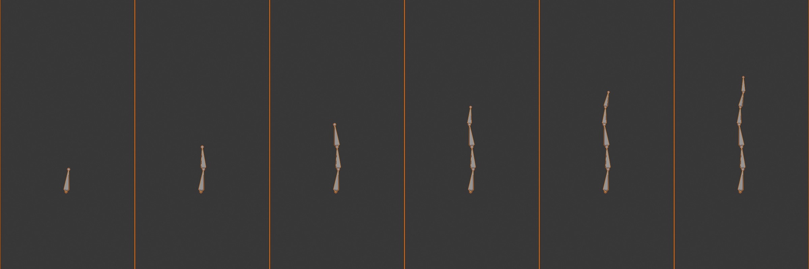
Starting Point - The Pelvis (Root):
- Add armature:
- Object Mode:
Shift + A> Armature > Single Bone - Appears at 3D cursor (should be at world origin)
- Object Mode:
- Enter Edit Mode:
Tab - Position pelvis bone:
- Select bone tail, move to pelvis/hip area
- Select bone head, move to base of spine
- Bone should be vertical, at hip height
- In side view: roughly at center of pelvis depth
- Name it: Press
F2, typepelvis
Building the Spine:
- Extrude spine segments:
- Select pelvis tail (top of pelvis bone)
- Press
E, move up to lower back position - Name:
spine_01 - Press
Eagain, move to mid back - Name:
spine_02 - Press
Eonce more, move to upper back/shoulders - Name:
spine_03
- Add chest (optional):
- Press
E, move to top of ribcage - Name:
chest
- Press
- Curve the spine:
- Side view (
Numpad 3) - Select spine bone heads/tails
- Adjust positions to create natural S-curve
- Lower back curves forward, upper back curves back
- Side view (
Adding Neck and Head:
- Neck bone:
- Select top spine/chest bone tail
- Press
E, move to base of skull - Name:
neck
- Head bone:
- Press
Eagain, move to top of head - Name:
head - In side view: slightly forward tilt is natural
- Press
Verify Spine Hierarchy:
- pelvis → spine_01 → spine_02 → spine_03 → neck → head
- All connected (each tail → next head)
- Test in Pose Mode: rotate pelvis, whole spine should move
✅ Phase 2: Arms (Left Side First)
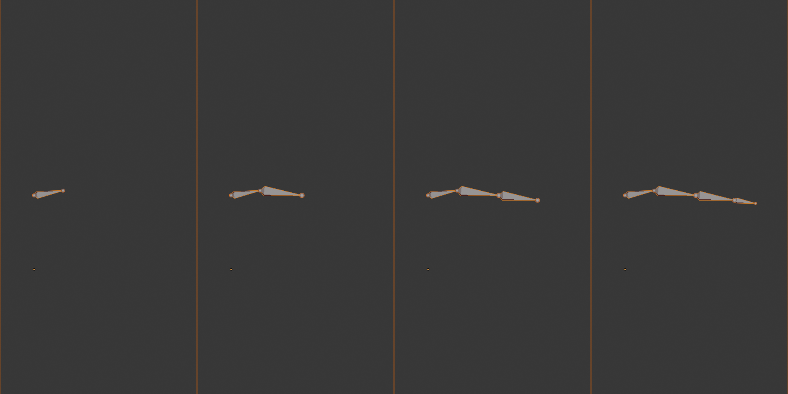
Shoulder Connection:
- Position 3D cursor:
- Select a vertex at shoulder joint location (in mesh)
Shift + S> Cursor to Selected
- Add shoulder bone:
Shift + A> Single Bone- Appears at cursor (shoulder position)
- Rotate and position: head at sternum, tail at shoulder joint
- Name:
shoulder.L
- Parent to spine:
- Select shoulder.L, then chest/spine_03 (Shift-select)
- Press
Ctrl + P> Keep Offset - Now shoulder follows spine rotation
Building the Arm Chain:
- Upper arm:
- Select shoulder.L tail
- Press
E, move to elbow position - Name:
upper_arm.L - Position head INSIDE ribcage at armpit level
- Tail at elbow joint (visible bump when arm is straight)
- Forearm:
- Press
E, move to wrist - Name:
forearm.L - Head at elbow, tail at wrist crease
- Press
- Hand:
- Press
E, move to knuckles - Name:
hand.L - Extends from wrist to middle knuckle
- Press
Adjust Arm Alignment:
- Front view: Check arm hangs straight down
- Side view: Elbow slightly behind arm center
- Top view: Arm extends outward from shoulder
- Test bend: Pose Mode, rotate forearm—should bend naturally
✅ Phase 3: Legs (Left Side First)
Upper Leg (Thigh):
- Add at hip:
- Position cursor at hip joint
Shift + A> Single Bone- Position: head INSIDE pelvis at hip joint, tail at knee
- Name:
upper_leg.L
- Parent to pelvis:
- Select upper_leg.L, then pelvis
Ctrl + P> Keep Offset (disconnected is typical)
- Position check:
- Hip joint is DEEP inside body, not at surface
- Side view: leg angles slightly forward
Lower Leg (Calf):
- Extrude from thigh:
- Select upper_leg.L tail
- Press
E, move to ankle - Name:
lower_leg.L
- Critical positioning:
- Front view: Knee at kneecap position
- Side view: Knee SLIGHTLY FORWARD (not center!)
- This forward position prevents IK ambiguity
- Ankle at ankle joint (between malleoli bumps)
Foot:
- Extrude from ankle:
- Press
E, move forward to ball of foot - Name:
foot.L
- Press
- Optional toe:
- Press
Eonce more, move to toe tips - Name:
toe.L - Can skip for simple characters
- Press
✅ Phase 4: Mirror to Create Right Side
Symmetrize - Automatic Mirroring:
- Select all left-side bones:
- In Edit Mode
- Box select all .L bones (shoulder, arm, leg chains)
- Don't select spine/center bones!
- Symmetrize:
- Menu: Armature > Symmetrize
- Or right-click > Symmetrize
- Result:
- Blender creates mirrored copies on right side
- Automatically renames .L to .R
- Maintains hierarchy (parents mirror correctly)
- shoulder.R, upper_arm.R, etc. all created!
- Verify:
- Check all bones present: shoulder.R, upper_arm.R, etc.
- Test hierarchy: rotate spine, both arms should move
Alternative: Manual Duplication:
- Select left bones,
Shift + Dto duplicate - Press
Xto constrain, type-1,Enter(mirrors on X-axis) - Manually rename .L to .R
- More work, but gives more control
Final Touches and Verification
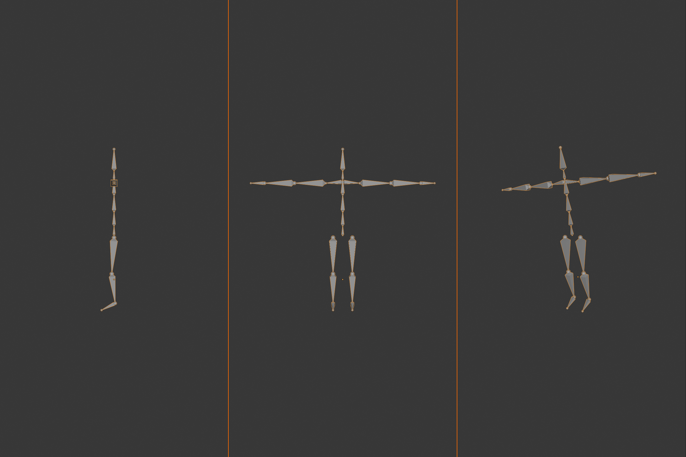
🔍 Complete Armature Checklist
Bone Count Verification:
- □ 1 pelvis (root)
- □ 3-4 spine bones
- □ 1 neck
- □ 1 head
- □ 2 shoulders (L and R)
- □ 2 upper arms
- □ 2 forearms
- □ 2 hands
- □ 2 upper legs
- □ 2 lower legs
- □ 2 feet (+ optional toes)
- Total: ~18-20 bones
Naming Verification:
- □ All center bones have no suffix (pelvis, spine_01, neck, head)
- □ All left bones end with .L
- □ All right bones end with .R
- □ No default names (Bone.001, etc.)
- □ Names are descriptive and consistent
Hierarchy Verification:
- □ Pelvis is root (no parent)
- □ Spine chain flows: pelvis → spine → neck → head
- □ Arms parent to upper spine/chest
- □ Legs parent to pelvis
- □ Test: Move pelvis in Pose Mode—everything should follow
Position Verification:
- □ All bones inside mesh volume
- □ Joints align to anatomical pivot points
- □ Knees slightly forward (critical!)
- □ Shoulders deep inside ribcage (not on surface)
- □ Hips deep inside pelvis
- □ Spine has natural S-curve in side view
Testing Your Armature
✅ Pose Mode Testing Workflow
- Switch to Pose Mode:
Ctrl + Tab - Test spine:
- Select spine_01, rotate (
R) - Upper body should bend
- Head and arms should follow
- Select spine_01, rotate (
- Test arm:
- Select shoulder.L, rotate
- Entire arm should rotate
- Select forearm.L, rotate
- Only forearm and hand should move
- Test leg:
- Select upper_leg.L, rotate
- Entire leg should move
- Select lower_leg.L, rotate
- Should bend at knee naturally
- Test pelvis (root):
- Select pelvis, move (
G) - ENTIRE character should move
- This confirms pelvis is true root
- Select pelvis, move (
- Reset pose:
- Select all (
A) Alt + R(clear rotation)Alt + G(clear location)- Returns to rest pose
- Select all (
💭 First Armature Milestone: Congratulations! If you've built this armature, you've accomplished something significant. This basic skeleton is the foundation for any biped character—from simple cartoon mascots to realistic human characters. The principles you've applied (hierarchy, naming, positioning) scale up to the most complex rigs in production. You've learned the professional workflow!
🎯 Biped Armature Summary
- Build order: Pelvis → Spine → Head → Arms → Legs → Mirror
- Spine chain: Pelvis (root) → 3-4 spine → neck → head (all connected)
- Arms: Shoulder → upper arm → forearm → hand (shoulder parents to chest)
- Legs: Upper leg → lower leg → foot (legs parent to pelvis)
- Symmetrize: Build left side, use Armature > Symmetrize for right
- Name properly: Center bones no suffix, sides use .L and .R
- Test in Pose Mode: Verify hierarchy and movement
- ~20 bones total: Production-ready foundation
Your first complete character skeleton—ready for weight painting!
⚙️ Bone Properties and Settings
Every bone has properties that control how it behaves, displays, and deforms the mesh. Understanding these settings lets you fine-tune your armature for specific needs—making some bones visible but not deforming, others deforming but hidden, and controlling exactly how each bone influences the character. Let's explore the essential bone properties that professional riggers use!
Accessing Bone Properties
🎛️ The Control Panel: Think of bone properties as the control panel for each individual bone—like adjusting settings on a musical instrument. Each knob and switch changes how that bone performs. Some settings affect appearance (visual only), others affect functionality (how it deforms mesh or interacts with constraints). Understanding what each setting does gives you complete control!
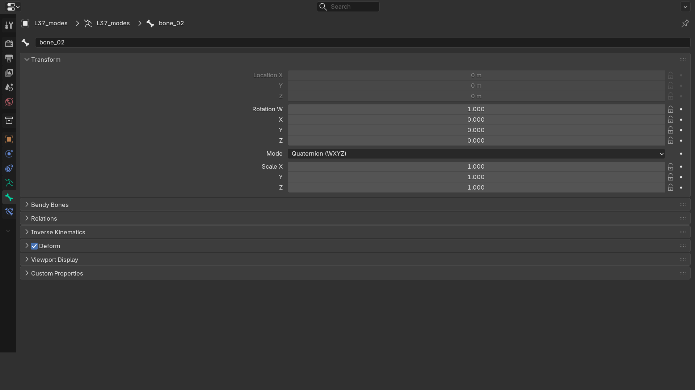
✅ Where to Find Bone Properties
Properties Panel Location:
- Select armature object
- Enter Edit Mode or Pose Mode
- Select a bone
- Look at right sidebar
- Click Bone Properties icon (looks like a bone 🦴)
- All settings for selected bone appear here
Quick Access:
- Press
Nto open sidebar (if hidden) - Properties update when you select different bones
- Can adjust multiple bones: select several, change affects all
Transform Properties
These control the bone's position, rotation, and size in 3D space.
📐 Transform Panel
Available in Edit Mode:
- Head X, Y, Z: Exact 3D coordinates of bone's head
- Tail X, Y, Z: Exact 3D coordinates of bone's tail
- Roll: Rotation around bone's length axis (in degrees)
- Length: Distance from head to tail (read-only display)
Practical Uses:
- Precision placement: Type exact coordinates for perfect alignment
- Mirror manually: Copy head X, negate it for opposite side
- Adjust roll: Type exact degree value instead of visual rotation
- Example: Set all spine bones to same X position (perfect center)
Relations and Hierarchy
🔗 Relations Panel
Parent Settings:
- Parent: Dropdown showing which bone is parent
- Can change parent by selecting different bone from list
- Same as using Ctrl + P, but via dropdown
- Connected: Checkbox
- Checked = head locked to parent's tail
- Unchecked = head can be anywhere in space
- Can toggle without re-parenting
Layer Assignment (Older System):
- 32 layer buttons (grid of dots)
- Click to assign bone to that layer
- Can be on multiple layers simultaneously
- Note: Blender 4.0+ uses Bone Collections instead (better system)
Bone Collections (Blender 4.0+):
- Named groups instead of numbered layers
- Can create collections: "Spine", "Arms", "Legs", etc.
- Assign bones to collections for organization
- More intuitive than layer numbers
Deformation Settings
These crucial settings control how bones affect the mesh when they move!
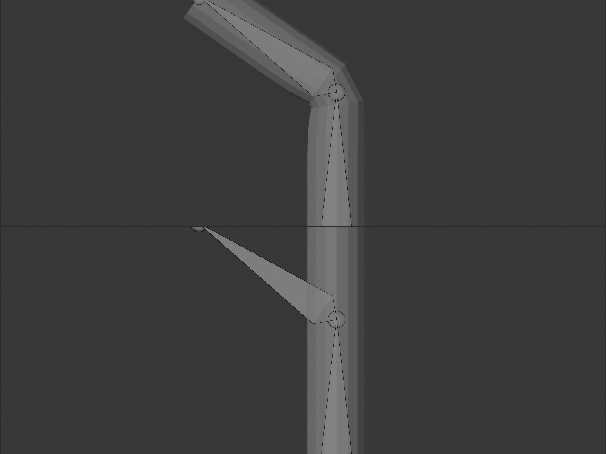
💪 Deform Panel - Critical Settings
Deform Checkbox:
- Checked (default): Bone deforms mesh (moves vertices)
- Use for: All bones that should bend the character
- Example: arm bones, leg bones, spine bones
- Unchecked: Bone is "non-deforming" (control bone only)
- Use for: Control bones, IK targets, helper bones
- Example: IK hand controller (moves arm but doesn't deform mesh)
- Saves performance (fewer bones calculating weights)
Envelope Settings (Legacy Method):
- Envelope: Old deformation method using radius
- Vertices within radius distance affected by bone
- Rarely used in modern workflows
- Weight painting gives more control
- Radius: Size of influence sphere
- Head radius and tail radius can differ
- Only matters if using envelope deformation
B-Bone Settings (Bendy Bones):
- Segments: How many sub-segments bone has
- 1 segment = normal rigid bone
- 2+ segments = bone can curve smoothly
- Perfect for: Spine, tail, tentacles, ropes
- Ease In/Out: Controls curvature at ends
- Makes bending more natural
- Advanced feature for smooth organic motion
Display Settings
👁️ Display Panel
Visibility:
- Hide: Make bone invisible (still functional)
- Useful for: Mechanism bones animators don't need to see
- Bone still works, just hidden in viewport
Hto hide selected,Alt + Hto unhide all
Custom Shape:
- Object: Replace bone display with custom mesh
- Example: Show hand controller as cube instead of bone
- Makes animator-friendly controls
- Common in production rigs
- How to use:
- Create mesh object (cube, sphere, custom shape)
- Select bone in Pose Mode
- In Custom Shape dropdown, select your mesh object
- Bone displays as that shape instead!
- At (bone): Which bone's location the shape displays at
- Usually left at default (self)
- Advanced: can display shape at different bone's position
- Scale: Size multiplier for custom shape
Wireframe:
- Show bone as wireframe even in solid shading
- Useful for seeing through to mesh underneath
Inverse Kinematics (IK) Settings
🦾 Inverse Kinematics Panel
What IK Does:
- Normal (FK): You rotate shoulder → upper arm → forearm → hand
- IK: You move hand, arm figures out how to get there
- Essential for: Feet (planted on ground), hands (grabbing objects)
- We'll cover IK in detail in rigging lesson
IK Stretch:
- How much bone can stretch to reach IK target
- 0.0 = no stretch (realistic)
- 1.0 = full stretch (cartoony)
Lock IK Axes:
- Prevent IK from rotating bone on specific axes
- Example: Lock Y and Z on forearm so elbow only bends one way
- Creates more predictable IK behavior
Stiffness:
- How resistant bone is to IK rotation on each axis
- Higher = less willing to bend
- Used to create preferential bending (knee bends before hip)
Bone Constraints (Preview)
🔒 Bone Constraints Panel
What Are Constraints?
- Rules that limit or automate bone movement
- Applied per-bone (each bone can have multiple constraints)
- Essential for advanced rigging
- We'll cover extensively in Lesson 39
Common Constraint Types:
- Limit Rotation: "Elbow can only bend 0-150°"
- Copy Rotation: "This bone mirrors another bone's rotation"
- Track To: "Eyes always look at target"
- IK: "Solve arm position to reach hand target"
- Stretch To: "Bone stretches to reach target"
Adding Constraints:
- Select bone in Pose Mode
- Bone Constraints panel
- Add Bone Constraint dropdown
- Choose constraint type
- Configure settings
Armature-Wide Settings
Some settings apply to the entire armature object, not individual bones.
✅ Armature Properties (Object Level)
Location: Armature Properties Panel (Different from Bone Properties)
Viewport Display:
- Display As: How ALL bones appear (Octahedral, Stick, B-Bone, etc.)
- Show:
- Names: Display bone names in viewport
- Axes: Show X, Y, Z axes on bones
- Shapes: Show custom bone shapes
- In Front: Bones always visible (X-ray for armature)
Skeleton:
- Pose Position: Toggle between Rest Pose and Current Pose
- Rest Pose: Shows original Edit Mode positions
- Pose: Shows current posed state
- Useful for checking if deformation looks good
- Layers / Collections: Show/hide bone groups
Motion Paths:
- Display animation paths for bones
- Advanced animation feature
- Shows trajectory over time
Practical Property Workflows
🛠️ Common Property Adjustments
Scenario 1: Creating Control Bones
- Duplicate arm bone chain
- Move duplicates outside character
- On original bones: Uncheck "Deform" (they become helpers)
- On duplicate bones: Add custom shapes (cubes, circles)
- Result: Animator-friendly control rig
Scenario 2: Making Flexible Spine
- Select spine bones
- Change display to "B-Bone"
- Set Segments to 3-5
- Result: Spine curves smoothly instead of rigid segments
Scenario 3: Hiding Mechanism Bones
- Select helper/mechanism bones
- Check "Hide" in Display panel
- Or press
Hin viewport - Result: Cleaner viewport for animator
Scenario 4: Organizing by Collections
- Create bone collection: "Deform Bones"
- Create another: "Control Bones"
- Assign bones to appropriate collections
- Toggle collections on/off to show only what you need
💭 Pro Tip: Don't feel overwhelmed by all these properties! For basic rigging, you'll mainly use: Deform checkbox (on/off), naming, and parent relationships. The advanced properties (IK, constraints, custom shapes) come into play when building production rigs. Learn the basics first, add complexity as you need it. Professional rigging is learned iteratively, not all at once!
🎯 Bone Properties Summary
- Transform: Head/tail position, roll angle, precise coordinates
- Relations: Parent assignment, connected toggle, layer/collection
- Deform checkbox: On = bends mesh, Off = control bone only
- Display: Hide, custom shapes, wireframe
- B-Bone segments: Make bones curve smoothly (spine, tail)
- IK settings: Stretch, axis locks, stiffness
- Constraints: Applied per-bone, control behavior
- Armature-wide: Display settings affect all bones
Properties give you fine control over every aspect of your rig!
🔀 Symmetry and Mirroring Bones
Most characters are symmetrical—left and right sides mirror each other. Building both sides manually would be tedious and error-prone. Thankfully, Blender has powerful symmetry tools that let you build one side perfectly, then automatically create the mirrored opposite. Master these tools and you'll cut your rigging time in half while ensuring perfect symmetry!
Why Symmetry Tools Are Essential
✂️ The Paper Snowflake Principle: Remember making paper snowflakes? You fold the paper, cut half a pattern, then unfold to reveal a perfectly symmetrical design. That's exactly how bone symmetry works! Build the left arm carefully (fold), then Symmetrize (unfold) to instantly create a perfect mirror image. Same work, double the result!
✅ Benefits of Symmetry Tools
Time Savings:
- Build one side instead of two (50% time reduction)
- Adjustments to one side auto-update the other
- No need to manually position right-side bones
- Professional riggers use this workflow exclusively
Perfect Symmetry Guaranteed:
- Mathematical precision—no "close enough"
- Left and right arms exactly match
- Critical for believable character movement
- Asymmetry immediately visible and distracting
Automatic Naming:
- Blender converts .L to .R automatically
- Maintains naming convention perfectly
- No manual renaming needed
Hierarchy Preservation:
- Parent-child relationships mirror correctly
- If shoulder.L parents upper_arm.L, then shoulder.R parents upper_arm.R
- Complete bone chains replicate perfectly
The Symmetrize Tool (Primary Method)
The Symmetrize command is your main symmetry tool—it's fast, automatic, and intelligent!
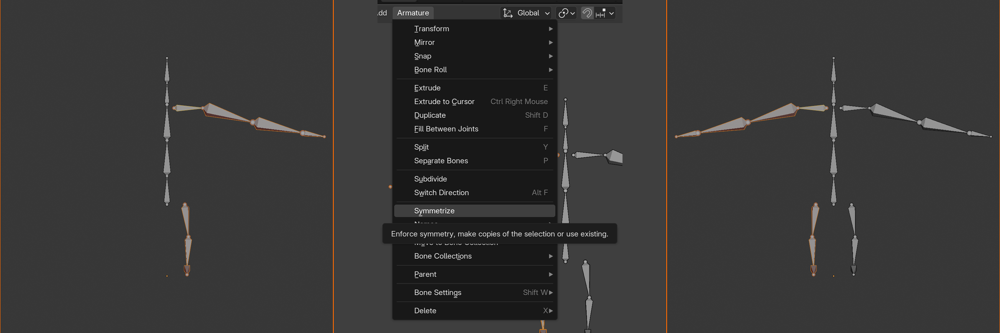
💡 Using Symmetrize
Basic Symmetrize Workflow:
- Build one side completely:
- Create all bones on left side
- Name them with .L suffix
- Set up hierarchy and positioning
- Test that everything works
- Select bones to mirror:
- Edit Mode: Select all .L bones
- Can use box select (
B) - Or select by name pattern (Select > Select Pattern)
- Don't select center bones! (spine, pelvis, head)
- Run Symmetrize:
- Menu: Armature > Symmetrize
- Or right-click > Symmetrize
- Blender creates mirrored copies instantly
- Verify results:
- Check that .R bones appeared
- Verify naming (upper_arm.L → upper_arm.R)
- Test hierarchy in Pose Mode
What Symmetrize Does:
- Duplicates selected bones
- Mirrors position across X-axis (left/right flip)
- Renames .L to .R (and vice versa)
- Preserves hierarchy relationships
- Maintains all bone properties (deform, display, etc.)
X-Axis Mirror Editing
For continuous symmetrical editing, enable X-Axis Mirror mode!
🪞 X-Axis Mirror Mode
What It Does:
- Edit left bone, right bone updates automatically
- Real-time mirroring as you work
- Perfect for: Making adjustments after initial creation
- Works in Edit Mode only
How to Enable:
- Enter Edit Mode
- Top header: Find Options dropdown (or press
Nfor sidebar) - Enable "X-Axis Mirror" checkbox
- Icon appears in header when active (butterfly/mirror symbol)
How It Works:
- Move upper_arm.L, upper_arm.R moves simultaneously
- Rotate forearm.L, forearm.R rotates oppositely
- Delete shoulder.L, shoulder.R also deletes
- Extrude from arm.L, creates mirrored extrusion on arm.R
Important Notes:
- Both .L and .R bones must already exist
- Doesn't create bones—only mirrors edits
- Names must match pattern (same base + .L/.R)
- Disable when working on center bones or single side
Manual Mirroring Techniques
Sometimes you need more control than automatic tools provide. Here are manual methods!
🛠️ Manual Duplication and Mirror
Method 1: Duplicate + Scale Mirror
- Select bones to mirror (e.g., all .L bones)
- Press
Shift + Dto duplicate - Press
S(scale), thenX(constrain to X-axis) - Type
-1and pressEnter - Bones mirror across X-axis!
- Manually rename .L to .R (batch rename or one-by-one)
Method 2: Copy Head/Tail Positions
- Select bone on left side
- Note head X position (e.g., 0.5)
- Select corresponding bone on right side
- Set head X position to negative value (e.g., -0.5)
- Repeat for tail position
- Perfect for: Adjusting individual bones
When to Use Manual Methods:
- Non-standard naming (not using .L/.R)
- Partial mirroring (only some bones)
- Custom mirror axis (not X)
- Learning/understanding what automatic tools do
Mirroring Poses and Animations
🎭 Pose Mirroring (Pose Mode)
Copy Pose from Left to Right:
- Enter Pose Mode
- Create pose on left side (rotate shoulder.L, forearm.L, etc.)
- Select all left-side bones that are posed
- Pose > Copy Pose
- Select corresponding right-side bones
- Pose > Paste Pose Flipped
- Left pose mirrors to right side!
Practical Uses:
- Walk cycles: Create left foot forward, mirror for right foot forward
- Symmetrical poses: Arms raised, both sides match
- Testing: Verify rig works identically on both sides
Flip Pose (Mirror Entire Character):
- Select all bones (
A) - Pose > Flip Pose
- Left and right sides swap
- Example: Right punch becomes left punch
Common Symmetry Problems and Solutions
❌ Troubleshooting Symmetry Issues
Problem 1: Symmetrize Creates No Bones
- Cause: Selected bones don't have .L suffix
- Solution: Rename bones to include .L, then Symmetrize
- Blender looks for .L/.R pattern specifically
Problem 2: Mirrored Bones in Wrong Position
- Cause: Armature object not at world origin
- Solution: Move armature object to origin (0, 0, 0)
- Or: Select armature, Object > Apply > Location
Problem 3: X-Axis Mirror Doesn't Work
- Cause 1: Right-side bones don't exist yet
- Solution: Use Symmetrize first to create .R bones
- Cause 2: Names don't match pattern
- Solution: Ensure bone names are identical except .L/.R
Problem 4: Mirrored Hierarchy Is Broken
- Cause: Parent bone wasn't selected during Symmetrize
- Solution: Select entire bone chain (parent + children), then Symmetrize
- Or: Manually re-parent mirrored bones
Problem 5: Some Bones Mirror, Others Don't
- Cause: Inconsistent naming (.L vs _L vs .Left)
- Solution: Standardize all naming to .L and .R
- Use batch rename to fix quickly
Symmetry Best Practices
✅ Professional Symmetry Workflow
1. Plan for Symmetry from Start
- Name bones with .L suffix as you create them
- Build complete left side before mirroring
- Test left side thoroughly first
- Don't mix .L and .R bones during initial creation
2. Build Left Side First (Convention)
- Industry standard: work on left, mirror to right
- Consistent across studios and software
- Most UI/tools default to left-to-right workflow
- Arbitrary choice, but consistency matters
3. Symmetrize Once, Then Enable X-Axis Mirror
- Initial creation: Build left bones, Symmetrize to create right
- Adjustments: Enable X-Axis Mirror, edits affect both sides
- Best of both worlds: automation + real-time updates
4. Center Bones Get No Suffix
- Spine, pelvis, head, neck: no .L or .R
- These bones shouldn't be selected during Symmetrize
- Only one copy exists (on center line)
5. Verify Symmetry Numerically
- Select upper_arm.L, note head X position (e.g., 0.5)
- Select upper_arm.R, should be exactly -0.5
- Perfect symmetry = positions are exact negatives
- Use properties panel to check precision
Advanced Symmetry Techniques
🚀 Pro-Level Symmetry Methods
Partial Symmetry Updates:
- Already have full armature, but changed left fingers?
- Select ONLY finger bones on left
- Symmetrize → only fingers update on right
- Rest of rig unchanged
Symmetrize + Keep Original:
- Want both left and right versions preserved?
- Duplicate .L bones first (
Shift + D) - Then Symmetrize
- Now you have .L, .R, AND duplicates of .L
Asymmetrical Characters with Symmetry Tools:
- Build symmetrical base, then break symmetry
- Example: Character with one cybernetic arm
- Use Symmetrize for basic bones
- Then modify right arm to be mechanical
- Disable X-Axis Mirror when working on unique side
💭 Studio Workflow: In professional studios, every humanoid character starts the same way: spine down the center, left arm built perfectly, left leg built perfectly, Symmetrize. This workflow is so standard that some studios have scripts that automate it. The 5 minutes you invest learning Symmetrize saves hours on every character you create—and professionals create dozens or hundreds of characters!
🎯 Symmetry and Mirroring Summary
- Symmetrize: Armature > Symmetrize (mirrors .L to .R)
- X-Axis Mirror: Real-time mirroring as you edit (requires both sides exist)
- Build left first: Industry convention, create left side then mirror
- Naming critical: Must use .L and .R suffixes for automatic tools
- Pose mirroring: Copy Pose + Paste Pose Flipped (Pose Mode)
- Manual method: Duplicate + Scale X by -1 (fallback option)
- Center bones: No suffix, don't mirror (spine, head, pelvis)
- Verify numerically: Check positions are exact negatives
- Time savings: 50% reduction by building one side only
Master symmetry tools = double your rigging speed!
🎯 Project: Character Skeleton
Time to put everything you've learned into practice! In this project, you'll build a complete character armature from scratch—applying positioning, hierarchy, naming, and symmetry techniques. This is your chance to create a production-ready skeleton that could be used for a real character. Follow along step-by-step, or challenge yourself to build it independently using the lesson as reference. Let's create your first professional armature!
🎯 Project Goal
Create a complete biped armature with:
- Properly positioned bones aligned to character anatomy
- Correct parent-child hierarchy
- Professional naming conventions (.L/.R suffixes)
- Symmetrical left and right sides
- Ready for weight painting and animation
⏱️ Estimated Time: 30-45 minutes
Project Setup
✅ Before You Begin
Option 1: Use Your Character Model
- If you created a character in Lesson 36, load that file
- You'll build the armature inside your character mesh
- Perfect for: Seeing how bones align to your specific model
Option 2: Download Practice Character
- Search online for "Blender character base mesh" or "T-pose character"
- Use a simple humanoid mesh to practice
- Perfect for: Focusing on rigging without modeling concerns
Option 3: Practice Without Character
- Create armature in empty scene
- Focus purely on bone structure and hierarchy
- Perfect for: Learning armature concepts without visual reference
Recommended Setup:
- Character in T-pose (arms out to sides, legs slightly apart)
- Character at world origin (0, 0, 0)
- Reference images loaded (front and side views)
- X-ray mode enabled (
Alt + Z) to see through mesh
Phase 1: Build the Spine Chain
🦴 Step 1: Create Root and Spine
Add the Armature:
- Object Mode:
Shift + A> Armature > Single Bone - Armature appears at 3D cursor
- Press
Tabto enter Edit Mode
Position the Pelvis (Root Bone):
- Front view:
Numpad 1 - Select bone's tail (small sphere at top)
- Press
Gto move, position at hip level - Select bone's head (large sphere at bottom)
- Press
G, move to base of pelvis - Side view:
Numpad 3 - Adjust depth—bone should be centered in pelvis
- Bone should be vertical, roughly 1-2 units tall
Name It:
- Bone still selected, press
F2 - Type:
pelvis - Press
Enter
Build Spine Segments:
- Select pelvis tail
- Press
E(extrude), move up to lower back - Click to confirm, press
F2, name:spine_01 - Press
Eagain, move to mid-back - Name:
spine_02 - Press
E, move to upper back/shoulder level - Name:
spine_03 - Optional: Press
E, move to top of ribcage - Name:
chest
Add Natural Spine Curve:
- Switch to side view (
Numpad 3) - Select spine_01 tail, press
G - Move slightly forward (lower back curves forward)
- Select spine_02 tail, move slightly back
- Create gentle S-curve matching human spine
🦴 Step 2: Add Neck and Head
Neck Bone:
- Select spine_03 or chest tail (top spine bone)
- Press
E, move to base of skull - Neck should be short (1-2 units)
- Name:
neck
Head Bone:
- Press
E, move to top of head - Should extend from skull base to crown
- Side view: slight forward tilt is natural
- Name:
head
Verify Spine Chain:
- Should have: pelvis → spine_01 → spine_02 → spine_03 → neck → head
- All bones connected (tail of one = head of next)
- Test: Press
Ctrl + Tab(Pose Mode) - Select pelvis, rotate (
R) - Entire spine should move together
- Press
Alt + Rto clear rotation - Press
Tabto return to Edit Mode
Phase 2: Build Left Arm
🦴 Step 3: Create Shoulder and Arm Chain
Add Shoulder Bone:
- Front view (
Numpad 1) Shift + S> Cursor to Selected (with spine_03/chest selected)Shift + A> Single Bone- New bone appears at cursor
- Rotate and position:
- Head at sternum/base of neck (center)
- Tail at shoulder joint (armpit level, INSIDE ribcage)
- Bone points outward to left
- Name:
shoulder.L
Parent Shoulder to Spine:
- Select shoulder.L
- Shift-select chest or spine_03 (parent)
- Press
Ctrl + P - Choose Keep Offset
- Now shoulder follows spine rotation
Build Upper Arm:
- Select shoulder.L tail
- Press
E, move to elbow position - Head should be INSIDE ribcage at armpit
- Tail at elbow joint (visible bump)
- Side view: check depth alignment
- Name:
upper_arm.L
Build Forearm:
- Press
E, move to wrist - Head at elbow, tail at wrist crease
- Side view: elbow slightly BEHIND arm center
- Name:
forearm.L
Build Hand:
- Press
E, move to middle knuckle - From wrist to base of fingers
- Name:
hand.L
Test Arm:
Ctrl + Tabto Pose Mode- Select shoulder.L, rotate—whole arm moves
- Select forearm.L, rotate—only forearm and hand move
- Looks natural? Good! If not, adjust in Edit Mode
Alt + Rto clear,Tabto Edit Mode
Phase 3: Build Left Leg
🦴 Step 4: Create Leg Chain
Add Upper Leg (Thigh):
- Position 3D cursor at hip joint (groin area)
Shift + A> Single Bone- Position head DEEP inside pelvis at hip joint
- This joint is much deeper than visible surface!
- Tail at knee (kneecap position)
- Front view: straight down from hip
- Side view: slight forward angle
- Name:
upper_leg.L
Parent to Pelvis:
- Select upper_leg.L
- Shift-select pelvis
Ctrl + P> Keep Offset- Leg now follows pelvis movement
Build Lower Leg (Calf):
- Select upper_leg.L tail
- Press
E, move to ankle - CRITICAL: Side view, knee should be SLIGHTLY FORWARD
- Not centered—this prevents IK problems
- Tail between ankle bumps (malleoli)
- Name:
lower_leg.L
Build Foot:
- Press
E, move forward to ball of foot - Ankle to where toes begin
- Should point forward, parallel to ground
- Name:
foot.L
Optional Toe:
- Press
E, move to toe tips - Name:
toe.L - Can skip for simple characters
Test Leg:
- Pose Mode: Rotate upper_leg.L—whole leg moves
- Rotate lower_leg.L—bends at knee naturally
- Knee bends backward (opposite of elbow)
- If knee bends wrong direction, check bone roll in Edit Mode
Phase 4: Mirror to Right Side
🔀 Step 5: Create Right Side with Symmetrize
Select Left-Side Bones:
- Edit Mode, front view
- Press
B(box select) - Drag box around all left-side bones:
- shoulder.L, upper_arm.L, forearm.L, hand.L
- upper_leg.L, lower_leg.L, foot.L (and toe.L if created)
- DO NOT select center bones! (pelvis, spine, neck, head)
Run Symmetrize:
- With left bones selected
- Menu: Armature > Symmetrize
- Or right-click > Symmetrize
- Magic happens! Right-side bones appear instantly
Verify Symmetrize Results:
- Check all right bones created:
- shoulder.R, upper_arm.R, forearm.R, hand.R
- upper_leg.R, lower_leg.R, foot.R, toe.R
- Names automatically changed .L to .R
- Positions perfectly mirrored
- Hierarchy preserved (shoulder.R parents to spine)
Final Test in Pose Mode:
Ctrl + Tabto Pose Mode- Select pelvis, move it (
G) - ENTIRE character should move—confirms pelvis is root
- Select spine_02, rotate—upper body bends, legs stay
- Select shoulder.R, rotate—right arm moves
- Select upper_leg.L, rotate—left leg moves
- Everything working? Perfect!
Alt + RandAlt + Gto clear all
Phase 5: Final Refinements
✅ Step 6: Polish and Verify
Display Settings:
- Select armature object
- Armature Properties (bone icon in properties panel)
- Viewport Display section:
- Enable "Names"—see bone names in viewport
- Enable "Axes"—see bone orientation
- Enable "In Front"—bones always visible
Verify Bone Roll:
- Edit Mode, select all bones (
A) - Press
Ctrl + N(Recalculate Roll) - Choose Global +Y Axis
- This auto-fixes most roll issues
- Test in Pose Mode—bones should bend naturally
Check Symmetry Numerically:
- Select upper_arm.L, check head X position (Bone Properties)
- Note value (e.g., 0.5)
- Select upper_arm.R, check head X
- Should be exact negative (e.g., -0.5)
- Perfect match = perfect symmetry!
Final Bone Count:
- Center bones: pelvis, spine_01, spine_02, spine_03, (chest), neck, head = 6-7
- Left arm: shoulder.L, upper_arm.L, forearm.L, hand.L = 4
- Right arm: shoulder.R, upper_arm.R, forearm.R, hand.R = 4
- Left leg: upper_leg.L, lower_leg.L, foot.L = 3
- Right leg: upper_leg.R, lower_leg.R, foot.R = 3
- Total: 20-21 bones
Success Checklist
📋 Verify Your Armature
Naming Check:
- □ All center bones have no suffix (pelvis, spine_01, neck, head)
- □ All left bones end with .L
- □ All right bones end with .R
- □ No default names like "Bone.001"
- □ Names are consistent (all lowercase with underscores)
Hierarchy Check:
- □ Pelvis is root (no parent)
- □ Spine flows: pelvis → spine → neck → head
- □ Shoulders parent to upper spine/chest
- □ Arms flow: shoulder → upper_arm → forearm → hand
- □ Legs parent to pelvis
- □ Legs flow: upper_leg → lower_leg → foot
Position Check:
- □ All bones inside mesh (not sticking out)
- □ Hip joints deep inside pelvis
- □ Shoulder joints inside ribcage (armpit level)
- □ Knees slightly forward (CRITICAL!)
- □ Elbows slightly back
- □ Spine has natural curve (side view)
Symmetry Check:
- □ Left and right arms mirror perfectly
- □ Left and right legs mirror perfectly
- □ Bone positions are exact negatives (check numerically)
Functionality Check (Pose Mode):
- □ Moving pelvis moves entire character
- □ Rotating spine moves upper body only
- □ Rotating shoulder moves entire arm
- □ Rotating forearm moves only forearm and hand
- □ Rotating upper_leg moves entire leg
- □ Rotating lower_leg bends knee naturally
- □ Both sides work identically
Bonus Challenges
🚀 Take It Further (Optional)
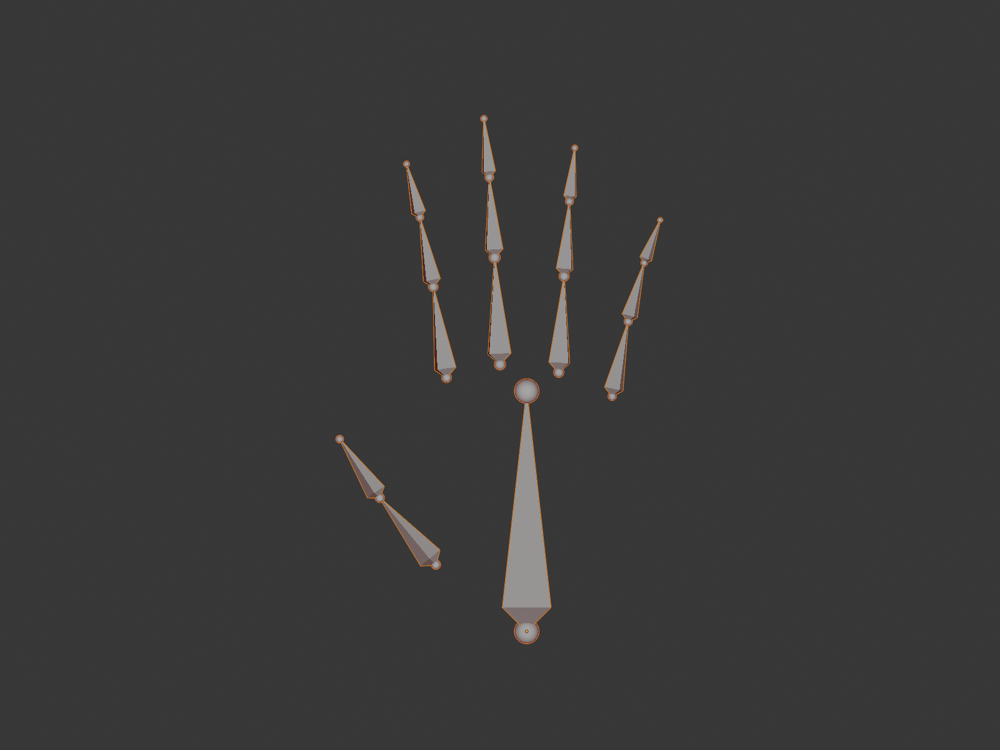
Challenge 1: Add Finger Bones
- Extrude from hand.L to create thumb (2 bones)
- Extrude 4 more finger chains (3 bones each)
- Name: thumb_01.L, index_01.L, middle_01.L, etc.
- Symmetrize to create right hand fingers
- Result: Fully articulated hands!
Challenge 2: Add Twist Bones
- Subdivide upper_arm.L into 2-3 segments
- Helps with forearm rotation deformation
- Subdivide upper_leg.L similarly
- Symmetrize to mirror to right side
- Result: Better twist deformation!
Challenge 3: Add Facial Bones
- Extrude from head to create jaw bone
- Add eye bones (left and right)
- Parent jaw to head, eyes to head
- Result: Basic facial animation capability!
Challenge 4: Make Spine Bendy
- Select all spine bones
- Bone Properties > Deform
- Set Segments to 4-5
- Armature Properties > Display As > B-Bone
- Result: Smooth curving spine!
Troubleshooting Common Issues
❌ Problem Solving
Issue 1: Symmetrize Didn't Create Right Side
- Cause: Left bones not named with .L suffix
- Fix: Rename all left bones to include .L, try again
Issue 2: Arm Doesn't Follow Spine
- Cause: Shoulder not parented to spine
- Fix: Select shoulder, Shift-select chest, Ctrl + P > Keep Offset
Issue 3: Knee Bends Wrong Way
- Cause: Bone roll incorrect
- Fix: Edit Mode, select lower_leg bones, Ctrl + N > Global +Y
Issue 4: Bones Look Weird/Asymmetrical
- Cause: Armature object not at origin
- Fix: Object Mode, select armature, Object > Apply > Location
Issue 5: Can't See Bones Through Mesh
- Fix 1: Press Alt + Z (X-ray mode)
- Fix 2: Armature Properties > Viewport Display > In Front
Saving Your Work
💾 Save and Document
Save Your Armature:
- File > Save As
- Name:
character_armature_v01.blend - Save in dedicated project folder
- Version number lets you iterate safely
Take Screenshots:
- Front view of complete armature
- Side view showing spine curve
- Pose Mode test poses
- Great for portfolio documentation!
Add Text Notes:
- Object Mode > Add > Text
- Type notes about rig specifications
- Example: "Basic biped, 20 bones, ready for weight painting"
- Helpful when returning to project later
🎉 Project Complete!
Congratulations! You've just created a professional character armature from scratch!
What You Accomplished:
- ✅ Built a complete biped skeleton with proper hierarchy
- ✅ Applied professional naming conventions
- ✅ Positioned bones anatomically for natural deformation
- ✅ Created perfect symmetry using Blender's tools
- ✅ Tested and verified functionality in Pose Mode
- ✅ Created production-ready foundation for animation
Next Steps:
- 🎯 Lesson 38: Weight Painting—connect armature to mesh
- 🎯 Lesson 39: Rigging Essentials—add IK, constraints, controls
- 🎯 Practice: Add fingers, facial bones, extra details
You've built your first character skeleton—this is a HUGE milestone in your 3D journey! The skills you learned here apply to every character you'll ever rig.
💭 Reflection Moment: Stop and appreciate what you've done. A month ago, you might not have known what an armature was. Now you've built one from scratch, understanding hierarchy, positioning, naming, and symmetry. These fundamentals work the same way at Pixar, in AAA game studios, and in professional VFX houses. You're learning real production skills—and that armature you just created? It's genuinely usable for animation. Well done!
📚 Lesson Summary
Congratulations on completing this comprehensive lesson on armatures and bones! You've learned the fundamental building blocks of character rigging—knowledge that will serve you throughout your entire 3D career. Let's recap everything you've mastered and look at what's coming next!
🎯 What You've Learned
Core Concepts:
- Armature fundamentals: Skeletal systems that control character deformation
- Bone anatomy: Head, tail, body, roll, and local coordinate systems
- Three modes: Object (move whole), Edit (build structure), Pose (animate)
- Parent-child hierarchies: How bones inherit movement from ancestors
- Anatomical positioning: Aligning bones to real joints for natural deformation
- Professional naming: Descriptive names with .L/.R suffixes for automation
- Symmetry tools: Building once and mirroring for efficiency
- Bone properties: Deform settings, display options, and constraints
Practical Skills:
- ✓ Creating armatures and adding bones
- ✓ Extruding bone chains with proper connections
- ✓ Positioning bones accurately inside characters
- ✓ Setting up parent-child relationships
- ✓ Naming bones using industry conventions
- ✓ Using Symmetrize and X-Axis Mirror
- ✓ Building complete biped skeletons
- ✓ Testing rigs in Pose Mode
Key Takeaways
💡 Essential Concepts to Remember
1. Armatures Are the Foundation
A well-built armature makes animation effortless. A poorly built armature makes every pose a struggle. Invest time here—it pays off exponentially!
2. Hierarchy Determines Movement Flow
- Parent bones control their children
- Children can move independently without affecting parents
- Single root bone (pelvis) makes moving entire character easy
- Logical hierarchy = intuitive animation
3. Position Matters More Than You Think
- Bones must align to anatomical pivot points (not surface)
- Knee slightly forward = natural bending and IK success
- Shoulder deep inside = realistic arm rotation
- Poor positioning = broken deformation (can't fix with weight painting)
4. Naming Is Not Optional
- Professional rigs have 50-200+ bones—good names are essential
- .L and .R suffixes enable automatic symmetry tools
- Descriptive names make rigs self-documenting
- Consistent naming = professional workflow
5. Symmetry Tools Save Massive Time
- Build one side perfectly, mirror instantly
- 50% time reduction for symmetrical characters
- Mathematical precision—perfect symmetry guaranteed
- Industry standard workflow for all humanoid characters
Common Mistakes to Avoid
⚠️ Pitfalls New Riggers Face
Mistake 1: Building Both Sides Manually
- ❌ Creating left and right bones separately
- ✅ Build left side, use Symmetrize tool
- Why: Saves time and ensures perfect symmetry
Mistake 2: Ignoring Bone Roll
- ❌ Leaving roll at default, bones bend sideways
- ✅ Use Ctrl + N (Recalculate Roll) or adjust manually
- Why: Roll determines bend direction—critical for natural movement
Mistake 3: Bones Outside Mesh
- ❌ Bones sticking out of character surface
- ✅ All bones inside mesh volume, aligned to joints
- Why: Bones outside mesh don't deform properly
Mistake 4: Leaving Default Names
- ❌ Bone.001, Bone.002, Bone.003...
- ✅ upper_arm.L, forearm.R, spine_01
- Why: Unnamed bones = hours wasted searching for "that one bone"
Mistake 5: Skipping Testing
- ❌ Building entire armature without testing hierarchy
- ✅ Test in Pose Mode frequently while building
- Why: Catching hierarchy errors early = easy fixes
Mistake 6: Centered Knee Position
- ❌ Knee perfectly centered in side view
- ✅ Knee slightly forward of leg center
- Why: Forward knee prevents IK solver ambiguity
Quick Reference Guide
⌨️ Essential Shortcuts
Mode Switching:
Tab- Toggle Edit Mode / Object ModeCtrl + Tab- Enter Pose Mode from Edit Mode
Bone Creation:
Shift + A- Add new bone (Edit Mode)E- Extrude bone (creates connected child)Shift + D- Duplicate bone
Transformation:
G- Move boneR- Rotate boneS- Scale bone (change length)Ctrl + R- Roll bone (twist along length)
Hierarchy:
Ctrl + P- Parent bones (select child, then parent)Alt + P- Clear parent / Disconnect
Naming:
F2- Rename selected bone- Right-click > Batch Rename - Rename multiple bones
Symmetry:
- Armature > Symmetrize - Mirror .L bones to .R
Ctrl + N- Recalculate bone roll
Selection:
A- Select all bonesAlt + A- Deselect allB- Box selectC- Circle select
Pose Mode:
Alt + R- Clear rotationAlt + G- Clear locationAlt + S- Clear scale
Display:
Alt + Z- X-ray mode (see through mesh)Z- Shading menu (wireframe, solid, etc.)H- Hide selected bonesAlt + H- Unhide all bones
📊 Bone Naming Cheat Sheet
| Body Part | Left Side | Right Side | Center |
|---|---|---|---|
| Pelvis/Root | — | — | pelvis |
| Spine | — | — | spine_01, spine_02, spine_03 |
| Chest | — | — | chest |
| Neck | — | — | neck |
| Head | — | — | head |
| Shoulder | shoulder.L | shoulder.R | — |
| Upper Arm | upper_arm.L | upper_arm.R | — |
| Forearm | forearm.L | forearm.R | — |
| Hand | hand.L | hand.R | — |
| Upper Leg | upper_leg.L | upper_leg.R | — |
| Lower Leg | lower_leg.L | lower_leg.R | — |
| Foot | foot.L | foot.R | — |
| Fingers | thumb_01.L, index_01.L, etc. | thumb_01.R, index_01.R, etc. | — |
Workflow Best Practices
✅ Professional Rigging Workflow
Step 1: Planning (Before Creating Bones)
- Study character anatomy and reference images
- Identify major joint locations
- Decide on bone count (simple vs. detailed)
- Plan naming convention and stick to it
Step 2: Building (Edit Mode)
- Start with center bones (pelvis → spine → head)
- Add left arm and left leg
- Name bones properly as you create them
- Test hierarchy frequently in Pose Mode
- Use Symmetrize to create right side
Step 3: Positioning (Edit Mode + Multiple Views)
- Front view: Check left-right alignment
- Side view: Check depth and curves
- Top view: Verify spacing and width
- Use X-ray mode to see bones through mesh
- Snap to vertices for precision
Step 4: Refinement (Edit Mode)
- Recalculate bone roll (Ctrl + N)
- Verify symmetry numerically
- Check all parent relationships
- Ensure proper naming (no Bone.001!)
Step 5: Testing (Pose Mode)
- Test every joint's range of motion
- Verify hierarchy works as expected
- Check that bones bend naturally
- Create sample poses to test rig
Step 6: Documentation
- Save file with version number
- Take reference screenshots
- Add notes about rig specifications
- Ready for next step: weight painting!
What's Next?
🚀 Your Rigging Journey Continues
Lesson 38: Weight Painting
- Connect armature to mesh (skinning)
- Paint vertex weights to control deformation
- Fix common weight painting issues
- Create smooth, natural character movement
- Your armature finally controls the mesh!
Lesson 39: Rigging Essentials
- Add IK (Inverse Kinematics) for hands and feet
- Create bone constraints for realistic limits
- Build control bones for animator-friendly rigs
- Add custom bone shapes
- Transform basic armature into production rig!
Beyond This Module:
- Animation: Use your rig to create character movement
- Advanced Rigging: Facial rigs, mechanical rigs, creature rigs
- Rigify: Blender's automatic rig generator
- Professional Workflows: Studio-quality character pipelines
Additional Resources
📚 Continue Learning
Blender Documentation:
- Blender Manual - Armatures: Official documentation
- Blender Manual - Rigging: Comprehensive rigging guide
- Search: "Blender armature tutorial" for video guides
Practice Projects:
- Beginner: Rig a simple robot or blocky character
- Intermediate: Add finger bones to your biped
- Advanced: Create a quadruped armature (dog, cat, horse)
- Challenge: Build a facial rig with jaw and eye bones
Study Reference:
- Human anatomy books (skeleton structure)
- Animation pose references
- Professional rigs (download free character rigs online)
- Study how pros organize complex armatures
Final Thoughts
🎓 Mastering Armatures Takes Practice
Your first armature won't be perfect—and that's completely normal! Professional riggers spend years refining their craft. The armature you built in this lesson gives you a solid foundation. Each character you rig will teach you something new. Some bones will need adjustment, some hierarchies will need tweaking, and that's all part of the learning process.
The difference between a beginner and a professional isn't that the professional never makes mistakes—it's that they know how to fix them quickly. Keep rigging, keep testing, keep iterating. Before you know it, you'll be creating complex rigs intuitively!
🎉 Lesson 37 Complete!
You've Mastered:
- ✅ Armature fundamentals and bone anatomy
- ✅ Creating and manipulating bones in Edit Mode
- ✅ Building hierarchies with parent-child relationships
- ✅ Positioning bones anatomically for natural deformation
- ✅ Professional naming conventions for organization
- ✅ Symmetry tools for efficient workflow
- ✅ Complete biped armature construction
- ✅ Testing and verifying rigs in Pose Mode
Achievement Unlocked:
🦴 Character Rigger - You can now build professional skeletal systems for 3D characters!
🎯 Ready for the Next Challenge?
Your armature is built and ready—but it's not connected to the mesh yet! In Lesson 38: Weight Painting, you'll learn how to bind your skeleton to your character's mesh, painting vertex weights to create smooth, natural deformation. That's where your rig truly comes alive!
See you in the next lesson, rigger! 🚀